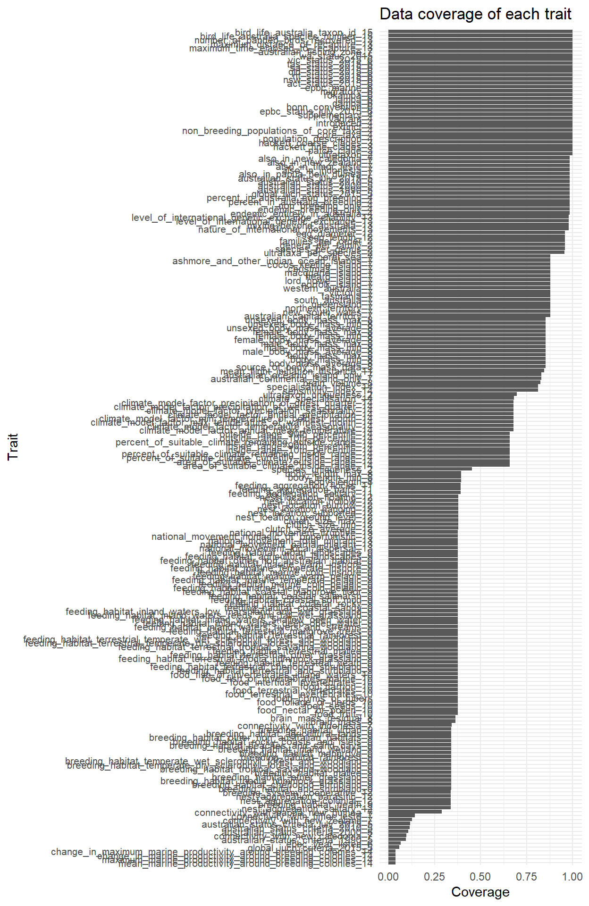
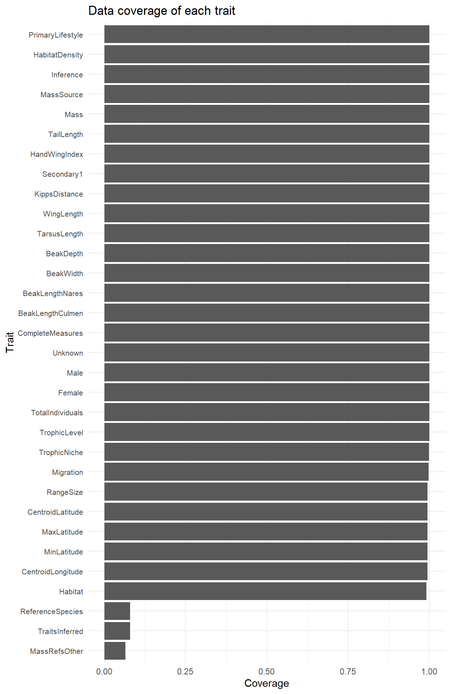
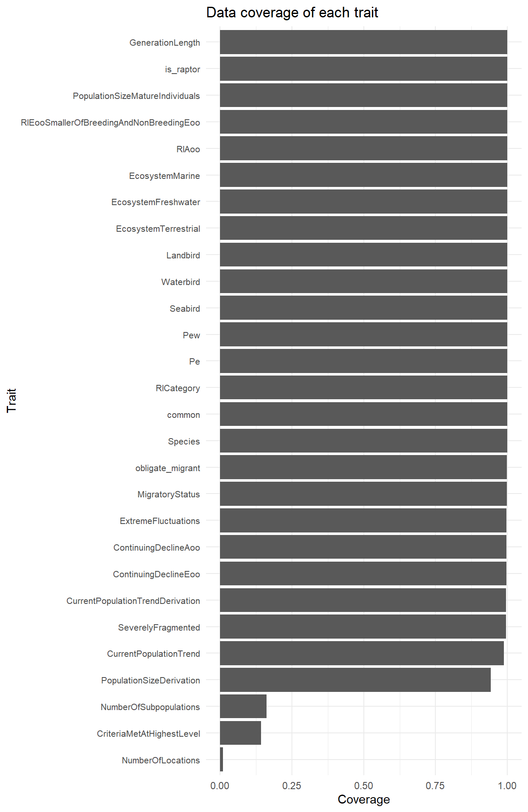

A Bird Database
This section outlines the expert-curated trait databases used in this project. For each database, a summary of its scope, taxonomic and geographic coverage, and the proportion of missing data is provided. Where available, metadata describing each trait variable—including definitions and data types—are also presented.
A.1 Australian Bird
Australian Bird dataset (Garnett et al. 2015) dataset provides a comprehensive and authoritative compilation of biological, ecological, conservation, and legal information for all Australian bird species and subspecies. It includes approximately 230 variables spanning taxonomy, population status, behaviour, breeding, mobility, and climate-related traits, and was developed with cross-referencing to HANZAB (Handbook of Australian, New Zealand & Antarctic Birds).
The dataset covers all species and subspecies recorded in Australia (including mainland, islands, and fishing zones) since European settlement, incorporating extinct and introduced taxa. It is particularly valuable for regional analyses, as habitat classifications are tailored to the Australian context, enabling more ecologically relevant interpretations.
Originally developed as an open-access synthesis of ecological data, the dataset is widely used in studies of species traits and extinction risk. However, data availability remains limited for some subspecies, and completeness varies across trait categories.
Link to the database: http://dx.doi.org/10.6084/m9.figshare.1499292
The database can also be accessed programmatically through the traitdata R package.
Link to the publication: https://doi.org/10.1038/sdata.2015.61
The data below is obtained from traitdata R package.

A.1.1 Summary
- Scope: Australia
- Total number of species: 2034
- Total number of traits: 212
- Year of release: 2015
- Missing data: Trait coverage ranged from 0.04 to 1, with a median of 0.66 (IQR: 0.38–0.96).
- Imputation approach: Missing values retained as
NA
A.1.2 Strengths
- Includes subspecies-level records, extending taxonomic resolution beyond species (although data coverage for many subspecies is limited)
- Incorporates phylogenetic information, enabling evolutionary and comparative analyses
- Uses standardised and analysis-ready coding schemes, making the dataset programmatically accessible
- Provides clear and descriptive variable names, improving interpretability and usability
A.1.3 Limitations
- Some traits (e.g., specialisation indices and climate-related metrics) are only available for core or mainland taxa, limiting completeness across all records
- These derived traits are model-based or processed variables and are therefore difficult to impute for missing taxa
- The dataset is over a decade old and may not reflect recent taxonomic updates or changes in species status and distributions
- Most trait are coded in binary format
A.1.4 Metadata
Metadata were obtained from the original publication.
| Column number | Column header | Category number | Category | Definition | Taxa assessed | Field codes | Explanation of field factor codes | Source of data | Notes |
|---|---|---|---|---|---|---|---|---|---|
| 1 | Taxon sort |
|
Sequence | Sorts all species taxonomically | All taxa | [sequence number] | See Notes | Sequence follows Jarvis et al. (2014) for orders, and Dickinson and Remsen (2013) and Dickinson and Christidis (2014) for families, genera and species apart from Meliphagidae which follow Joseph et al. (2014). Subspecies are sorted after their parent species and alphabetically by their subspecific name. Non-breeding populations of Australian breeding seabirds have the prefix ‘p’ and Supplementary taxa have the prefix ‘s’; these are sorted separately at the end | |
| 2 | Taxon sort CandB |
|
Sequence | Sorts all species taxonomically | All taxa | [sequence number] | See Notes | Sequence of orders, families, genera and species follows Christidis and Boles (2008). Subspecies are sorted after their parent species and alphabetically by their subspecific name. Non-breeding populations of Australian breeding seabirds have the prefix ‘p’ and Supplementary taxa have the prefix ‘s’; these are sorted separately at the end | |
| 3 | Taxon common name |
|
Taxonomy & nomenclature | BirdLife Australia’s taxon common name | All taxa | [name] | From BirdLife Australia (2015) | ||
| 4 | Genus name |
|
Taxonomy & nomenclature | BirdLife Australia’s taxon genus name | All taxa | [name] | From Dickinson and Remsen (2013) and Dickinson and Christidis (2014) unless stated in Taxonomic notes | ||
| 5 | Species name |
|
Taxonomy & nomenclature | BirdLife Australia’s taxon species name | All taxa | [name] | Definition follows BirdLife International (2014) | BirdLife International (2014) have used principles from Tobias et al. (2010) to adjudicate species definitions in a consistent manner across the globe. The taxonomy of BirdLife International has been adopted by the IUCN, Convention on Migratory Species of WIld Animals (Bonn Convention) and the European Union | |
| 6 | Subspecies name |
|
Taxonomy & nomenclature | BirdLife Australia’s taxon subspecies name | All subspecies | [name] / NA | NA = not applicable | See Taxonomic notes field for source | |
| 7 | Taxon scientific name CandB |
|
Taxonomy & nomenclature | Scientific name for species used by Christidis and Boles (2008) | All species recognised by Christidis and Bioles (2008) | [name] / NA | NA = not applicable | Christidis and Boles (2008) | |
| 8 | Taxonomic notes |
|
Taxonomy & nomenclature | Notes on taxonomic derivation | As required | [notes] / NA | NA = not applicable | Derivation of taxonomy, particularly at subspecies level, from BirdLife Australia | |
| 9 | Family common name |
|
Taxonomy & nomenclature | Common name for family | All taxa | [name] | Names this database | ||
| 10 | Family scientific name |
|
Taxonomy & nomenclature | Scientific name for family | All taxa | [name] | From Dickinson and Remsen (2013) and Dickinson and Christidis (2014) | ||
| 11 | Order |
|
Taxonomy & nomenclature | Scientific name for order | All taxa | [name] | From Jarvis et al. (2014) | ||
| 12 | Sequence of orders |
|
Taxonomy & nomenclature | Sequence number of orders within Class Aves | All taxa | [value] | From Jarvis et al. (2014) | ||
| 13 | Family within order |
|
Taxonomy & nomenclature | Sequence number of families within orders | All taxa | [value] | Derived from Dickinson and Remsen (2013) and Dickinson and Christidis (2014) | Dickinson and Remsen (2013) and Dickinson and Christidis (2014) are the most recent complete standardised analysis of all bird taxa | |
| 14 | Genus within family |
|
Taxonomy & nomenclature | Sequence number of genera within families | All taxa | [value] | Derived from Dickinson and Remsen (2013) and Dickinson and Christidis (2014) | Dickinson and Remsen (2013) and Dickinson and Christidis (2014) are the most recent complete standardised analysis of all bird taxa | |
| 15 | Species within genus |
|
Taxonomy & nomenclature | Sequence number of species within families | All taxa | [value] | Derived from Dickinson and Remsen (2013) and Dickinson and Christidis (2014) moderated by species definitions from del Hoyo et al. (2014) for non-passerines and BirdLife International (2014) for passerines | ||
| 16 | Subspecies within species |
|
Taxonomy & nomenclature | Sequence number of subspecies within species | All taxa | [value] | Derived from Dickinson and Remsen (2013) and Dickinson and Christidis (2014) moderated by species definitions from del Hoyo et al. (2014) for non-passerines and BirdLife International (2014) for passerines | ||
| 17 | Species |
|
Taxonomy & nomenclature | Full species | All taxa | 1 / 0 / NA | 1 = species; 0 = not a species; NA = not applicable | From scientific name | Not applicable to two Supplementary taxa that are spuriosly reported in some published checklists |
| 18 | Subspecies |
|
Taxonomy & nomenclature | Subspecies of polytypic species | All taxa | 1 / 0 / NA | 1 = subspecies; 0 = not a subspecies; NA = not applicable | From scientific name | Not applicable to two Supplementary taxa that are spuriosly reported in some published checklists |
| 19 | Ultrataxon |
|
Taxonomy & nomenclature | Terminal taxon | All taxa | 1 / 0 / NA | 1 = ultrataxon; 0 = not an ultrataxon; NA = not apllicable | From scientific name of species and any related subspecies | Not applicable to two Supplementary taxa that are spuriosly reported in some published checklists |
| 20 | Ultrataxa per species |
|
Taxonomy & nomenclature | Number of ultrataxa in species | All taxa excluding populations and supplementary taxa | [value] / NA | NA = not assessed | Derived from Dickinson and Remsen (2013) and Dickinson and Christidis (2014) | Dickinson and Remsen (2013) and Dickinson and Christidis (2014) are the most recent complete standardised analysis of all bird taxa |
| 21 | Species per genus |
|
Taxonomy & nomenclature | Number of species in genus | All taxa excluding populations and supplementary taxa | [value] / NA | NA = not assessed | Derived from Dickinson and Remsen (2013) and Dickinson and Christidis (2014) | Dickinson and Remsen (2013) and Dickinson and Christidis (2014) are the most recent complete standardised analysis of all bird taxa |
| 22 | Genera per family |
|
Taxonomy & nomenclature | Number of genera in family | All taxa excluding populations and supplementary taxa | [value] / NA | NA = not assessed | Derived from Dickinson and Remsen (2013) and Dickinson and Christidis (2014) | Dickinson and Remsen (2013) and Dickinson and Christidis (2014) are the most recent complete standardised analysis of all bird taxa |
| 23 | Families per order |
|
Taxonomy & nomenclature | Number of families in order | All taxa excluding populations and supplementary taxa | [value] / NA | NA = not assessed | Derived from Dickinson and Remsen (2013) and Dickinson and Christidis (2014) | Dickinson and Remsen (2013) and Dickinson and Christidis (2014) are the most recent complete standardised analysis of all bird taxa |
| 24 | Species uniqueness |
|
Taxonomy & nomenclature | Constructed measure of species uniqueness | All species excluding populations and supplementary taxa | [value] / NA | NA = not assessed | Derived from global analysis of Szabo et al. (2012), extended in this database to include families/order but excludes subspecies/species | |
| 25 | Ultrataxon uniqueness |
|
Taxonomy & nomenclature | Constructed measure of ultrataxon uniqueness | All ultrataxa excluding populations and supplementary taxa | [value] / NA | NA = not assessed | Derived from global analysis of Szabo et al. (2012), extended in this database to include families/order | |
| 26 | Patch clade |
|
Phylogeny | The monophyletic clade, following Jetz et al. (2012) | All taxa | [name] | From http://birdtree.org, downloaded October 2014. | For details see Jetz et al. (2012) | |
| 27 | Hackett fine clade |
|
Phylogeny | Hackett fine clade, following Jetz et al. (2012) and based on Hackett et al. (2008) | All taxa | [name] | From http://birdtree.org, downloaded October 2014. | For details see Jetz et al. (2012) | |
| 28 | Hackett coarse clade |
|
Phylogeny | Hackett coarse clade, following Jetz et al. (2012) and based on Hackett et al. (2008) | All taxa | [name] | From http://birdtree.org, downloaded October 2014. | For details see Jetz et al. (2012) | |
| 29 | Population description |
|
Australian population status | Type of population occurring in Australia that is described in that row | All taxa | Australian / Domestic / Endemic (breeding only) / Endemic (entirely Australian) / Extinct (Australia only, extant elsewhere) / Extinct (formerly endemic) / Failed Introduction / Hoax, fraud or mislabelled / Introduced / No confirmed record / No record / Non-breeding migrant / Non-breeding migrant population of Australian breeding taxon / Taxonomy uncertain / Vagrant / Vagrant (from introduction to New Zealand) | See Notes field | Extracted from HANZAB; Interpretation this database | Australian: Australian breeding population of taxa that also breed elsewhere (core taxa [part] - see definition below); Domestic: found only in association with humans even if temporarily feral (supplementary taxa - see definition below); Endemic (breeding only): breeds only in Australia but migrates or frequently disperses beyond its borders (core taxa [part]); Endemic (entirely Australian): occurs nowhere else except Australia (core taxa [part]); Extinct (Australia only, extant elsewhere): Australian population extinct (extinct taxa [part]) with other extant populations occurring outside Australia; Extinct (formerly endemic): previously occurred only in Australia, now extinct (extinct taxa [part]); Failed Introduction: taxon introduced to Australia and established wild populations that have not persisted (supplementary taxa [part]); Hoax, fraud or mislabelled: refers to Roper River Scrub-robin formerly erroneously included in legislative schedules (supplementary taxa [part]); Introduced: taxon that has been introduced to Australia since 1788 and established self-sustaining wild populations (introduced taxa); No confirmed record: reported from Australia but record not accepted by the BirdLife Australia Rarities Committee (supplementary taxa [part]); No record: on some legislative schedules but never recorded in Australia (supplementary taxa [part]); Non-breeding migrant: occurs regularly in Australia but breeds elsewhere (core taxa [part]); Non-breeding migrant population of Australian breeding taxon: non-breeding populations of marine taxa that breed in Australia but also have populations elsewhere that may or do visit Australian waters regularly (non-breeding populations of core taxa); Taxonomy uncertain: Round Island Petrel listed on legislative schedules but taxonomic distinctness from Herald Petrel and identity of individual uncertain (supplementary taxa [part]); Vagrant: taxa that cross into Australian jurisdictional boundaries in insignificant numbers, record accepted by the BirdLife Australia Rarities Committee (vagrant taxa [part]); Vagrant (from introduction to New Zealand): vagrants derived from a population successfully introduced to New Zealand (vagrant taxa [part]) |
| 30 | Core taxa |
|
Australian population status | Extant bird taxa regularly occurring naturally in Australia | All taxa | 1 / 0 | 1 = core taxon; 0 = not a core taxon | Extracted from Christidis & Boles (2008) and HANZAB; interpretation this database | Taxa that occur only in Australia or its Oceanic territories, breed only in Australia but migrate or frequently disperse beyond its borders, breed both in Australia and elsewhere or occur regularly in Australia or the Australian Fishing Zone but do not breed |
| 31 | Non-breeding populations of breeding seabirds |
|
Australian population status | Non-breeding populations of marine taxa that breed in Australia but also have populations elsewhere that may or do visit Australian waters regularly | All taxa | 1 / 0 | 1 = non-breeding population of core taxon; 0 = not a non-breeding population of a core taxon | Extracted from HANZAB; interpretation this database | All have a Taxon sort number prefixed by the letter ‘p’ |
| 32 | Extinct |
|
Australian population status | Taxa that formerly occurred in Australia | All taxa | 1 / 0 | 1 = extinct; 0 = not extinct | From Garnet et al. (2011) | Taxa that occurred naturally in Australia at the time of European settlement (1788) but are now extinct in Australia. Includes taxa for which the Australian population is extinct but which remain extant elsewhere |
| 33 | Introduced |
|
Australian population status | Naturalised taxa | All taxa | 1 / 0 | 1 = introduced; 0 = not introduced | From Christidis & Boles (2008), HANZAB | Taxa that have been introduced to Australia since 1788 and have established self-sustaining wild populations, including one (Redpoll) introduced first to New Zealand before establishing in Australia (Macquarie Island). Does not include Canada Goose, Chaffinch and Yellowhammer that were introduced to New Zealand but are vagrants to Australia |
| 34 | Vagrant |
|
Australian population status | Non-breeding taxa that reach Australia in insignificant numbers | All taxa | 1 / 0 | 1 = vagrant; 0 = not vagrant | From Christidis & Boles (2008), HANZAB and BirdLife Australia’s Rarities Committee; interpretation this database | Taxa that cross into Australian jurisdictional boundaries in insignificant numbers, record accepted by the BirdLife Australia Rarities Committee. This includes some taxa that have remained to breed for a few years but the breeding population has not persisted (Cape Gannet) as well as taxa introduced to New Zealand before becoming vagrants to Australia. Garganey, Little Ringed Plover, Redshank, Ruff, Red-rumped Swallow, Grey Wagtail are considered the core species closest to being vagrants; Little Grebe Tachybaptus ruficollis ssp. and Chinese Little Egret Egretta garzetta garzetta are the vagrants closest to being considered core species. Any attempt to create a numerical threshold (e.g. <100 individuals/0.01% of the population as used in the Action Plans for Australian Birds) is problematic so this definition is the opposite of that used in the Convention on Migratory Species’ for migratory species which is “the entire population or any geographically separate part of the population of any species or lower taxon of wild animals, a significant proportion of whose members cyclically and predictably cross one or more national jurisdictional boundaries” |
| 35 | Supplementary |
|
Australian population status | Taxa that are erroneously listed as occurring naturally in Australia or as having established self-sustaining populations after being introduced | All taxa | 1 / 0 | 1 = is a supplementary taxon; 0 = is not a supplementary taxon | See Notes | Includes the following categories of bird (from the Population description field): Domestic: found only in association with humans even if temporarily feral; Failed Introduction: taxon introduced to Australia and established wild populations that have not persisted; Hoax, fraud or mislabelled: refers to Roper River Scrub-robin formerly erroneously included in legislative schedules; No confirmed record: claimed to have been seen in Australia but the record has not been accepted by the BirdLife Australia Rarities Committee; No record: on some legislative schedules but never recorded in Australia; Taxonomy uncertain: taxa on some legislative schedules but never recorded in Australia, the Round Island Petrel which is listed on legislative schedules but taxonomic distinctness from Herald Petrel and identity of individual uncertain; and the Roper River Scrub-robin currently erroneously included in legislative schedules because based on a specimen that is either a hoax, a fraud or poorly labelled. All have a Taxon sort number prefixed by the letter ‘s’ |
| 36 | Endemic entirely in Australia |
|
Australian population status | Taxon occurs nowhere else except Australia, its oceanic islands and the associated fishing zone | All except Supplementary taxa | 1 / 0 / NA | 1 = entirely endemic; 0 = not entirely endemic; NA = not assessed | Extracted from HANZAB | Includes Australian taxa recorded only as vagrants in other countries |
| 37 | Endemic breeding only |
|
Australian population status | Taxon breeds only in Australia but regularly occurs elsewhere | All except Supplementary taxa | 1 / 0 / NA | 1 = breeds only in Australia but occurs elsewhere when not breeding; 0 = not as above; NA = not assessed | Extracted from HANZAB | |
| 38 | Non-breeding only |
|
Australian population status | Taxon regularly occurs in Australia but breeds elsewhere | All except Supplementary taxa | 1 / 0 / NA | 1 = occurs regularly in Australia but does not breed in Australia; 0 = not as above; NA = not assessed | Extracted from HANZAB | |
| 39 | Percent in Australia breeding |
|
Australian population status | Estimated percentage of population that breeds in Australia | All except Supplementary taxa | 0 / 1 / 2 / 3 / 4 / 5 / 6 / 7 / NA | 0 = 0%; 1 = vagrant; 2 = <1% but more than vagrant; 3 = 1-10%; 4 = >10-25%; 5 = >25-50%; 6 = >50-<100%; 7 = 100%; NA = not assessed | Estimated for this database | See discussion of vagrancy in descriptor Notes for column Vagrant |
| 40 | Percent in Australia non-breeding |
|
Australian population status | Estimated percentage of the population occurring in Australia when not breeding | All except Supplementary taxa | 0 / 1 / 2 / 3 / 4 / 5 / 6 / 7 / NA | 1 = 0%; 1 = vagrant; 2 = <1% but more than vagrant; 3 = 1-10%; 4 = >10-25%; 5 = >25-50%; 6 = >50-<100%; 7 = 100%; NA = not assessed | Estimated for this database | See discussion of vagrancy in descriptor Notes for column Vagrant |
| 41 | Global IUCN status 2015 |
|
Conservation status | Global risk of extinction in 2015 | All species except Supplementary species | EX / CR / EN / VU / NT / DD / LC / NA / not listed | EX = Extinct; CR = Critically Endangered; EN = Endangered; VU = Vulnerable; NT = Near Threatened; DD = Data Deficient; LC = Least Concern; NA = not assessed | From IUCN Red List of Threatened Species (2014) | |
| 42 | Global IUCN criteria 2015 |
|
Conservation status | Criteria under which Global risk of extinction in 2015 was determined | All species except Supplementary species | [Red List criteria] / NA | NA = not applicable | From IUCN Red List of Threatened Species (2014) | For explanations of Categories and Criteria see http://www.iucnredlist.org |
| 43 | Australian status 1990 |
|
Conservation status | Extinction risk status Australia in 1990 assessed using IUCN Red List criteria in 2015 | All except Supplementary taxa | EX / CR / CR (PE) / EN / VU / NT / LC / Introduced / Vagrant / NA | EX = Extinct; CR = Critically Endangered; CR (PE) = Critically Endangered (Presumed Exinct); EN = Endangered; VU = Vulnerable; NT = Near Threatened; LC = Least Concern; NA = not assessed | Recalculated in 2010 (Garnett et al. 2011) and subsequently, if necessary, by decisions of the BirdLife Australia Threatened Species Committee. | Extinction risk categories are those of the IUCN Red List (http://www.iucnredlist.org). See also Garnett (1992) and Garnett and Crowley (2000) |
| 44 | Australian status criteria 1990 |
|
Conservation status | IUCN Red List criteria met in 1990 as assessed in 2015 | Taxa meeting IUCN Red List criteria (CR, CR (PE), EN,, VU, NT in Australian in 1990 as assessed in 2015 | [Red List criteria] / NA | NA = not applicable | See previous field for source. | Criteria are those of the IUCN Red List (http://www.iucnredlist.org) |
| 45 | Australian status 2000 |
|
Conservation status | Extinction risk status Australia in 2000 assessed using IUCN Red List criteria in 2015 | All except Supplementary taxa | EX / CR / CR (PE) / EN / VU / NT / LC / Introduced / Vagrant / NA | EX = Extinct; CR = Critically Endangered; CR (PE) = Critically Endangered (Presumed Exinct); EN = Endangered; VU = Vulnerable; NT = Near Threatened; LC = Least Concern; NA = not assessed | Recalculated in 2010 (Garnett et al. 2011) and subsequently, if necessary, by decisions of the BirdLife Australia Threatened Species Committee. | Extinction risk categories are those of the IUCN Red List (http://www.iucnredlist.org). See also Garnett and Crowley (2000) |
| 46 | Australian status criteria 2000 |
|
Conservation status | IUCN Red List criteria met in 2000 as assessed in 2015 | Taxa meeting IUCN Red List criteria (CR, CR (PE), EN,, VU, NT in Australian in 2000 as assessed in 2015 | [Red List criteria] / NA | NA = not applicable | See previous field for source. | Criteria are those of the IUCN Red List (http://www.iucnredlist.org) |
| 47 | Australian status 2010 |
|
Conservation status | Extinction risk status Australia in 2010 assessed using IUCN Red List criteria in 2015 | All except Supplementary taxa | EX / CR / CR (PE) / EN / VU / NT / LC / Introduced / Vagrant / NA | EX = Extinct; CR = Critically Endangered; CR (PE) = Critically Endangered (Presumed Exinct); EN = Endangered; VU = Vulnerable; NT = Near Threatened; LC = Least Concern; NA = not assessed | Recalculated in 2010 (Garnett et al. 2011) and subsequently, if necessary, by decisions of the BirdLife Australia Threatened Species Committee. | Extinction risk categories are those of the IUCN Red List (http://www.iucnredlist.org) |
| 48 | Australian criteria 2010 |
|
Conservation status | IUCN Red List criteria met in 2010 as assessed in 2015 | Taxa meeting IUCN Red List criteria (CR, CR (PE), EN,, VU, NT in Australian in 2010 as assessed in 2015 | [Red List criteria] / NA | NA = not applicable | See previous field for source. | Criteria are those of the IUCN Red List (http://www.iucnredlist.org) |
| 49 | Australian status July 2015 |
|
Conservation status | Extinction risk status Australia in July 2015 assessed using IUCN Red List criteria | All except Supplementary taxa | EX / CR / CR (PE) / EN / VU / NT / LC / Introduced / Vagrant / NA | EX = Extinct; CR = Critically Endangered; CR (PE) = Critically Endangered (Presumed Exinct); EN = Endangered; VU = Vulnerable; NT = Near Threatened; LC = Least Concern; NA = not assessed | Recalculated, if necessary, by decisions of the BirdLife Australia Threatened Species Committee. | Extinction risk categories are those of the IUCN Red List (http://www.iucnredlist.org) |
| 50 | Australian status criteria July 2015 |
|
Conservation status | IUCN Red List criteria met in July 2015 | Taxa meeting IUCN Red List criteria (CR, CR (PE), EN,, VU, NT in Australian in 2015 | [Red List criteria] / NA | NA = not applicable | See previous field for source. | Criteria are those of the IUCN Red List (http://www.iucnredlist.org) |
| 51 | EPBC Status July 2015 |
|
Legal status | Status under the Environment Protection and Biodiversity Conservation Act 1999 | All taxa | EX / CR / EN / VU / not listed | EX = Extinct; CR = Critically Endangered; EN = Endangered; VU = Vulnerable | From Environment Protection and Biodiversity Conservation Act (1999) List of Threatened Fauna (2015) | |
| 52 | EPBC year listed |
|
Legal status | Year current status gazetted under the Environment Protection and Biodiversity Conservation Act | All taxa | [year] / NA | NA = not applicable | From Environment Protection and Biodiversity Conservation Act (1999) List of Threatened Fauna (2015) | |
| 53 | Bonn Convention |
|
Legal status | Status under the Bonn Convention on Migratory Species | All taxa | A1 / A2S / A2S* / A2H / not listed | A1 = taxon is listed in Appendix 1; A2S = taxon is listed in Appendix 2; A2S* = taxon listed here as a result of a recent taxonomic revision of a species listed in Appendix 2; A2H = taxon is member of a family listed in Appendix 2 | From Environment Protection and Biodiversity Conservation Act (1999) Bonn Convention appendices (2015) | |
| 54 | CAMBA |
|
Legal status | Listed under the China Australia Migratory Bird Agreement (CAMBA) | All taxa | 1 / not listed | 1 = listed under CAMBA | From Environment Protection and Biodiversity Conservation Act (1999) Migratory Species Lists (2015) | |
| 55 | JAMBA |
|
Legal status | Listed under the Japan Australia Migratory Bird Agreement (JAMBA) | All taxa | 1 / not listed | 1 = listed under JAMBA | From Environment Protection and Biodiversity Conservation Act (1999) Migratory Species Lists (2015) | |
| 56 | ROKAMBA |
|
Legal status | Listed under the Republic of Korea Australia Migratory Bird Agreement (ROKAMBA) | All taxa | 1 / not listed | 1 = listed under ROKAMBA | From Environment Protection and Biodiversity Conservation Act (1999) Migratory Species Lists (2015) | |
| 57 | Migratory |
|
Legal status | Listed as Migratory under the Environment Protection and Biodiversity Conservation Act | All taxa | 1 / not listed | 1 = listed as migratory | From Environment Protection and Biodiversity Conservation Act (1999) Migratory Species Lists (2015) | |
| 58 | EPBC Marine |
|
Legal status | Listed as a marine species under the Environment Protection and Biodiversity Conservation Act | All taxa | 1 / not listed | 1 = listed as marine | From Australia’s Protection and Biodiversity Conservation Act List of Marine Species (2015) | |
| 59 | ACT status 2015 |
|
Legal status | Legal conservation status in the Australian Capital Territory in 2015 | All taxa | EN / VU / not listed | EN = Endangered; VU = Vulnerable | From Australian Capital Territory Threatened Species List (2015). | Includes some vagrants not considered core taxa |
| 60 | NSW status 2015 |
|
Legal status | Legal conservation status in New South Wales in 2015 | All taxa | EX (presumed) / CR / EN / EN (population) / VU / not listed | EX (presumed) = Presumed Extinct; CR = Critically Endangered, EN = Endangered; EN (population) = a population of the taxon is Endangered; VU = Vulnerable | From New South Wales Threatened Species Conservation Act 1995 No 101 (12 Dec 2014). | Extracted from Schedule 1A Critically endangered species and ecological communities; Schedule 1. Endangered species, populations and ecological communities; Schedule 2 Vulnerable species and ecological communities. Includes some vagrants not considered core taxa. Includes Lord Howe Island taxa |
| 61 | NT status 2015 |
|
Legal status | Legal conservation status in the Northern Territory in 2015 | All taxa | EX / CR / EN / VU / not listed | EX = Extinct; CR = Critically Endangered; EN = Endangered; VU = Vulnerable | From Northern Territory Threatened Species List Birds (2014). | Includes some vagrants not considered core taxa |
| 62 | QLD status 2015 |
|
Legal status | Legal conservation status in Queensland in 2015 | All taxa | EX / EN / VU / VU* / NT / International / LC / Prohibited / not listed | EX = Extinct; EN = Endangered; VU = Vulnerable; VU* - see Notes; NT = Near Threatened; LC = Least Concern | From Queensland Nature Conservation (Wildlife) Regulation 2006 (2014). | Extracted from Schedule 1 Extinct; Schedule 2 Endangered; Schedule 3 Vulnerable; Schedule 5 Near Threatened; Schedule 6 Least Concern; Schedule 7 International; Schedule 8 Prohibited. Includes some vagrants not considered core taxa. VU*: the Southern Cassowary is listed as Vulnerable (northern population) and Endangered (southern population) |
| 63 | SA status 2015 |
|
Legal status | Legal conservation status in South Australia in 2015 | All taxa | EN / VU / Rare / Other / Unprotected / not listed | EN = Endangered; VU = Vulnerable; Other - see Notes | From South Australian National Parks and Wildlife Act 1972 (2014). | Extracted from Schedule 7 Endangered; Schedule 8 Vulnerable; Schedule 9 Rare; Schedule 10 Unprotected; Schedule 11: Other: Emu are listed as taxa to which a provision about farming protected species applies. Includes some vagrants not considered core taxa |
| 64 | TAS status 2015 |
|
Legal status | Legal conservation status in Tasmania in 2015 | All taxa | x / e / v / r / not listed | x = extinct; e = endangered; v = vulnerable; r = rare | From Tasmanian Threatened Species List - Vertebrate Animals (2014). | Includes Macquarie Island taxa. http://dpipwe.tas.gov.au/conservation/threatened-species/lists-of-threatened-species/threatened-species-vertebrates. Includes some vagrants not considered core taxa |
| 65 | VIC status 2015 |
|
Legal status | Legal conservation status in Victoria in 2015 | All taxa | Ex / Th / not listed | Ex = Extinct; Th = Threatened | From Victorian Department of Environment & Primary Industries Flora and Fauna Guarantee Act 1988 Threatened List May (2014). | Includes some vagrants not considered core taxa |
| 66 | WA status 2015 |
|
Legal status | Legal conservation status in Western Australia in 2015 | All taxa | EX / CR / EN / VU / other / priority / not listed / see notes | EX = Extinct; CR = Critically Endangered; EN = Endangered; VU = Vulnerable | From Western Australian Threatened Fauna - Specially Protected Fauna Notice (2014). | Extracted from Schedule 1 Critically Endangered, Endangered, Vulnerable, Schedule 2 Presumed Extinct; Schedule 4 Other and Priority. Only Houtman Abrolhos population of Brush Bronzewing is listed as priorityepartment of Parks and Wildlife (2014). P4* (Western Brush Bronzewing): priority status applies to the Abrolhos population only. Includes some vagrants not considered core taxa |
| 67 | Australian Capital Territory |
|
Distribution | Occurrence status of non-vagrant taxa in the Australian Capital Territory | Core, Extinct and Introduced taxa, and Non-breeding populations of breeding seabirds | Core / Extinct / Introduced / Introduced Extinct / not listed / NA | Core taxa are extant bird taxa regularly occurring naturally in the jurisdiction; NA = not assessed | Species information from Birds Queensland (2014); subspecies information extracted from HANZAB, del Hoyo et al. (1992-2013) | Status codes in the Taxa assessed field refer to the national codes employed elsewhere in this database. Field codes are local versions of the National codes as they apply to the jurisdiction. Note, therefore, that Core taxa in this jurisdiction are a sub-set of national Core taxa, and that taxa may be regionally Introduced or Extinct even if nationally Native or Extant |
| 68 | New South Wales |
|
Distribution | Occurrence status of non-vagrant taxa in New South Wales | Core, Extinct and Introduced taxa, and Non-breeding populations of breeding seabirds | Core / Extinct / Introduced / Introduced Extinct / not listed / NA | Core taxa are extant bird taxa regularly occurring naturally in the jurisdiction; NA = not assessed | Species information from Birds Queensland (2014); subspecies information extracted from HANZAB, del Hoyo et al. (1992-2013) | Status codes in the Taxa assessed field refer to the national codes employed elsewhere in this database. Field codes are local versions of the National codes as they apply to the jurisdiction. Note, therefore, that Core taxa in this jurisdiction are a sub-set of national Core taxa, and that taxa may be regionally Introduced or Extinct even if nationally Native or Extant |
| 69 | Northern Territory |
|
Distribution | Occurrence status of non-vagrant taxa in the Northern Territory | Core, Extinct and Introduced taxa, and Non-breeding populations of breeding seabirds | Core / Extinct / Introduced / not listed / NA | Core taxa are extant bird taxa regularly occurring naturally in the jurisdiction; NA = not assessed | Species information from Birds Queensland (2014); subspecies information extracted from HANZAB, del Hoyo et al. (1992-2013) | Status codes in the Taxa assessed field refer to the national codes employed elsewhere in this database. Field codes are local versions of the National codes as they apply to the jurisdiction. Note, therefore, that Core taxa in this jurisdiction are a sub-set of national Core taxa, and that taxa may be regionally Introduced or Extinct even if nationally Native or Extant |
| 70 | Queensland |
|
Distribution | Occurrence status of non-vagrant taxa in Queensland | Core, Extinct and Introduced taxa, and Non-breeding populations of breeding seabirds | Core / Extinct / Introduced / not listed / NA | Core taxa are extant bird taxa regularly occurring naturally in the jurisdiction; NA = not assessed | Species information from Birds Queensland (2014); subspecies information extracted from HANZAB, del Hoyo et al. (1992-2013) | Status codes in the Taxa assessed field refer to the national codes employed elsewhere in this database. Field codes are local versions of the National codes as they apply to the jurisdiction. Note, therefore, that Core taxa in this jurisdiction are a sub-set of national Core taxa, and that taxa may be regionally Introduced or Extinct even if nationally Native or Extant |
| 71 | South Australia |
|
Distribution | Occurrence status of non-vagrant taxa in South Australia | Core, Extinct and Introduced taxa, and Non-breeding populations of breeding seabirds | Core / Extinct / Introduced / not listed / NA | Core taxa are extant bird taxa regularly occurring naturally in the jurisdiction; NA = not assessed | Species information from Birds Queensland (2014); subspecies information extracted from HANZAB, del Hoyo et al. (1992-2013) | Status codes in the Taxa assessed field refer to the national codes employed elsewhere in this database. Field codes are local versions of the National codes as they apply to the jurisdiction. Note, therefore, that Core taxa in this jurisdiction are a sub-set of national Core taxa, and that taxa may be regionally Introduced or Extinct even if nationally Native or Extant |
| 72 | Tasmania |
|
Distribution | Occurrence status of non-vagrant taxa in Tasmania | Core, Extinct and Introduced taxa, and Non-breeding populations of breeding seabirds | Core / Extinct / Introduced / Introduced Extinct / not listed / NA | Core taxa are extant bird taxa regularly occurring naturally in the jurisdiction; NA = not assessed | Species information from Birds Queensland (2014); subspecies information extracted from HANZAB, del Hoyo et al. (1992-2013) | Status codes in the Taxa assessed field refer to the national codes employed elsewhere in this database. Field codes are local versions of the National codes as they apply to the jurisdiction. Note, therefore, that Core taxa in this jurisdiction are a sub-set of national Core taxa, and that taxa may be regionally Introduced or Extinct even if nationally Native or Extant |
| 73 | Victoria |
|
Distribution | Occurrence status of non-vagrant taxa in Victoria | Core, Extinct and Introduced taxa, and Non-breeding populations of breeding seabirds | Core / Extinct / Introduced / not listed / NA | Core taxa are extant bird taxa regularly occurring naturally in the jurisdiction; NA = not assessed | Species information from Birds Queensland (2014); subspecies information extracted from HANZAB, del Hoyo et al. (1992-2013) | Status codes in the Taxa assessed field refer to the national codes employed elsewhere in this database. Field codes are local versions of the National codes as they apply to the jurisdiction. Note, therefore, that Core taxa in this jurisdiction are a sub-set of national Core taxa, and that taxa may be regionally Introduced or Extinct even if nationally Native or Extant |
| 74 | Western Australia |
|
Distribution | Occurrence status of non-vagrant taxa in Western Australia | Core, Extinct and Introduced taxa, and Non-breeding populations of breeding seabirds | Core / Extinct / Introduced / not listed / NA | Core taxa are extant bird taxa regularly occurring naturally in the jurisdiction; NA = not assessed | Johnstone and Darnell (2015) but HANZAB used to define vagrants. | Status codes in the Taxa assessed field refer to the national codes employed elsewhere in this database. Field codes are local versions of the National codes as they apply to the jurisdiction. Note, therefore, that Core taxa in this jurisdiction are a sub-set of national Core taxa, and that taxa may be regionally Introduced or Extinct even if nationally Native or Extant |
| 75 | Norfolk Island |
|
Distribution | Occurrence status of non-vagrant taxa on Norfolk Island | Core, Extinct and Introduced taxa, and Non-breeding populations of breeding seabirds | Core / Extinct / Introduced / not listed / NA | Core taxa are extant bird taxa regularly occurring naturally in the jurisdiction; NA = not assessed | Occurrence status based on Schodde et al. (1983) with additional information on subspecies extracted from sources listed in Taxonomic notes (field above) and del Hoyo et al. (1992-2013) | Status codes in the Taxa assessed field refer to the national codes employed elsewhere in this database. Field codes are local versions of the National codes as they apply to the jurisdiction. Note, therefore, that Core taxa in this jurisdiction are a sub-set of national Core taxa, and that taxa may be regionally Introduced or Extinct even if nationally Native or Extant |
| 76 | Lord Howe Island |
|
Distribution | Occurrence status of non-vagrant taxa on Lord Howe Island | Core, Extinct and Introduced taxa, and Non-breeding populations of breeding seabirds | Core / Extinct / Introduced / Introduced Extinct / not listed / NA | Core taxa are extant bird taxa regularly occurring naturally in the jurisdiction; NA = not assessed | Occurrence status based on McAllan et al (2004) with additional information on subspecies extracted from sources listed in Taxonomic notes (field above) and del Hoyo et al. (1992-2013) | Status codes in the Taxa assessed field refer to the national codes employed elsewhere in this database. Field codes are local versions of the National codes as they apply to the jurisdiction. Note, therefore, that Core taxa in this jurisdiction are a sub-set of national Core taxa, and that taxa may be regionally Introduced or Extinct even if nationally Native or Extant |
| 77 | Heard Island |
|
Distribution | Occurrence status of non-vagrant taxa on Heard Island | Core, Extinct and Introduced taxa, and Non-breeding populations of breeding seabirds | Core / NA / not listed | Core taxa are extant bird taxa regularly occurring naturally in the jurisdiction; NA = not assessed | Occurrence status based on HANZAB with additional information on subspecies extracted from sources listed in Taxonomic notes (field above) and del Hoyo et al. (1992-2013) | Status codes in the Taxa assessed field refer to the national codes employed elsewhere in this database. Field codes are local versions of the National codes as they apply to the jurisdiction. Note, therefore, that Core taxa in this jurisdiction are a sub-set of national Core taxa, and that taxa may be regionally Introduced or Extinct even if nationally Native or Extant |
| 78 | Macquarie Island |
|
Distribution | Occurrence status of non-vagrant taxa on Macquarie Island | Core, Extinct and Introduced taxa, and Non-breeding populations of breeding seabirds | Core / Extinct / Introduced / not listed / NA | Core taxa are extant bird taxa regularly occurring naturally in the jurisdiction; NA = not assessed | Occurrence status based on HANZAB with additional information on subspecies extracted from sources listed in Taxonomic notes (field above) and del Hoyo et al. (1992-2013) | Status codes in the Taxa assessed field refer to the national codes employed elsewhere in this database. Field codes are local versions of the National codes as they apply to the jurisdiction. Note, therefore, that Core taxa in this jurisdiction are a sub-set of national Core taxa, and that taxa may be regionally Introduced or Extinct even if nationally Native or Extant |
| 79 | Christmas Island |
|
Distribution | Occurrence status of non-vagrant taxa on Christmas Island | Core, Extinct and Introduced taxa, and Non-breeding populations of breeding seabirds | Core / Introduced / not listed / NA | Core taxa are extant bird taxa regularly occurring naturally in the jurisdiction; NA = not assessed | Occurrence status based on James and McAllan (2014) with additional information on subspecies extracted from sources listed in Taxonomic notes (field above) and del Hoyo et al. (1992-2013) | Status codes in the Taxa assessed field refer to the national codes employed elsewhere in this database. Field codes are local versions of the National codes as they apply to the jurisdiction. Note, therefore, that Core taxa in this jurisdiction are a sub-set of national Core taxa, and that taxa may be regionally Introduced or Extinct even if nationally Native or Extant |
| 80 | Cocos Keeling Island |
|
Distribution | Occurrence status of non-vagrant taxa on Cocos Keeling Island | Core, Extinct and Introduced taxa, and Non-breeding populations of breeding seabirds | Core / Introduced / Introduced Extinct / not listed / NA | Core taxa are extant bird taxa regularly occurring naturally in the jurisdiction; NA = not assessed | Occurrence status based on Stokes et al. (1984) with additional information on subspecies extracted from sources listed in Taxonomic notes (field above) and del Hoyo et al. (1992-2013) | Status codes in the Taxa assessed field refer to the national codes employed elsewhere in this database. Field codes are local versions of the National codes as they apply to the jurisdiction. Note, therefore, that Core taxa in this jurisdiction are a sub-set of national Core taxa, and that taxa may be regionally Introduced or Extinct even if nationally Native or Extant |
| 81 | Ashmore and other Indian Ocean islands |
|
Distribution | Occurrence status of non-vagrant taxa on Ashmore and other Indian Ocean Is. that are within Australian jurisdiction but excluding Christmas and Cocos (Keeling) Islands | Core, Extinct and Introduced taxa, and Non-breeding populations of breeding seabirds | Core / NA / not listed | Core taxa are extant bird taxa regularly occurring naturally in the jurisdiction; NA = not assessed | Occurrence status based on Milton (2005) with additional information on subspecies extracted from sources listed in Taxonomic notes (field above) and del Hoyo et al. (1992-2013) | Status codes in the Taxa assessed field refer to the national codes employed elsewhere in this database. Field codes are local versions of the National codes as they apply to the jurisdiction. Note, therefore, that Core taxa in this jurisdiction are a sub-set of national Core taxa, and that taxa may be regionally Introduced or Extinct even if nationally Native or Extant |
| 82 | Coral Sea |
|
Distribution | Occurrence status of non-vagrant taxa currently or formerly breeding on islands within Coral Sea waters under Australian jurisdiction | Core, Extinct and Introduced taxa, and Non-breeding populations of breeding seabirds | Core / NA / not listed | Core taxa are extant bird taxa regularly occurring naturally in the jurisdiction; NA = not assessed | Occurrence status based on HANZAB and Carter and Mustoe (2007) with additional information on subspecies extracted from sources listed in Taxonomic notes (field above) and del Hoyo et al. (1992-2013) | Status codes in the Taxa assessed field refer to the national codes employed elsewhere in this database. Field codes are local versions of the National codes as they apply to the jurisdiction. Note, therefore, that Core taxa in this jurisdiction are a sub-set of national Core taxa, and that taxa may be regionally Introduced or Extinct even if nationally Native or Extant |
| 83 | Australian Fishing Zone |
|
Distribution | Non-vagrant taxa that feed in the marine Australian Fishing Zone | All taxa | 1 / 0 | 1 = feeds in the Australian Fishing Zone; 0 = does not feed in the Australian Fishing Zone | Occurrence extracted from HANZAB and Barrett et al. (2003) with additional information on subspecies extracted from sources listed in Taxonomic notes (field above) and del Hoyo et al. (1992-2013) | The Australian Fishing Zone generally extends to 200 nautical miles from any Australian coastline, i.e. including oceanic islands; exceptions include marine boundaries with Indonesia, Papua New Guinea and New Caledonia, which are closer to land |
| 84 | Also in Papua New Guinea |
|
Distribution | Status of Australian taxa in Papua New Guinea | All except Supplementary taxa | present / vagrant / not listed / NA | present = occurs in Papua New Guinea in more than trivial numbers and is thus shared with Australia; vagrant = trivial numbers irregularly recorded in Papua New Guinea; NA = not assessed | Status extracted from del Hoyo et al. (1992-2013) with additional information on subspecies extracted from sources listed in Taxonomic notes (field above) | |
| 85 | Connectivity with Papua New Guinea |
|
Distribution | Likelihood of population connectivity between Australia and Papua New Guinea | Taxa present in Papua New Guinea | certain / probable / possible / none / NA | See Notes field | Interpretation this database | certain: taxon seen crossing Torres Strait, there are banding records, has invaded from Australia in historical times, are known to disperse and mix widely while at sea; probable: known to cross marine barriers but potential to doubt connectivity since no definitive proof (includes many migrants from the north that may not stop in Papua New Guinea; possible: marine barrier potentially crossed but any movement to and from Australia likely to be infrequent if it occurs at all; none: no evidence of movement to or from Australia (usually different subspecies, sometimes because separation large and never recorded crossing marine barrier) |
| 86 | Also in Indonesia |
|
Distribution | Status of Australian taxa in Indonesia | All except Supplementary taxa | present / vagrant / not listed / NA | present = occurs in Indonesia in more than trivial numbers and is thus shared with Australia; vagrant = trivial numbers irregularly recorded in Indonesia; NA = not assessed | Status extracted from del Hoyo et al. (1992-2013) with additional information on subspecies extracted from sources listed in Taxonomic notes (field above) | |
| 87 | Connectivity with Indonesia |
|
Distribution | Likelihood of population connectivity between Australia and Indonesia | Taxa present in Indonesia | certain / probable / possible / none / NA | See Notes field | Interpretation this database | certain: there are banding records, has invaded from Australia in historical times, are known to disperse and mix widely while at sea; probable: known to cross marine barriers but potential to doubt connectivity since no definitive proof (includes many migrants from the north that may not stop in Indonesia; taxa known to cross into Papua New Guinea across Torres Strait but may not disperse west to West Papua); possible: marine barrier potentially crossed but any movement to and from Australia likely to be infrequent if it occurs at all; none: no evidence of movement to or from Australia (usually different subspecies, sometimes because separation large and never recorded crossing marine barrier) |
| 88 | Also In Timor-Leste |
|
Distribution | Status of Australian taxa in Timor-Leste | All except Supplementary taxa | present / vagrant / not listed / NA | present = occurs in Timor-Leste in more than trivial numbers and is thus shared with Australia; vagrant = trivial numbers irregularly recorded in Timor-Leste; NA = not assessed | Status extracted from Trainor et al. (2007) with additional information on subspecies extracted from sources listed in Taxonomic notes (field above) and del Hoyo et al. (1992-2103) | |
| 89 | Connectivity with Timor-Leste |
|
Distribution | Likelihood of population connectivity between Australia and Timor-Leste | Taxa present in Timor-Leste | certain / probable / possible / none / NA | See Notes field | Interpretation this database | certain: there are banding records, has invaded from Australia in historical times, are known to disperse and mix widely while at sea; probable: known to cross marine barriers but potential to doubt connectivity since no definitive proof (includes many migrants from the north that may not stop in Timor Leste); possible: marine barrier potentially crossed but any movement to and from Australia likely to be infrequent if it occurs at all; none: no evidence of movement to or from Australia (usually different subspecies, sometimes because separation large and never recorded crossing marine barrier) |
| 90 | Also in New Zealand |
|
Distribution | Status of Australian taxa in New Zealand | All except Supplementary taxa | present / vagrant / not listed / NA | present = occurs in New Zealand in more than trivial numbers and is thus shared with Australia; vagrant = trivial numbers irregularly recorded in New Zealand; NA = not assessed | Status extracted from Ornithological Society of New Zealand (2010) with additional information on subspecies extracted from sources listed in Taxonomic notes (field above) and del Hoyo et al. (1992-2103) | |
| 91 | Connectivity with New Zealand |
|
Distribution | Likelihood of population connectivity between Australia and New Zealand | Taxa present in New Zealand | certain / probable / possible / none / NA | See Notes field | Interpretation this database | certain: there are banding records, has invaded from Australia in historical times, are known to disperse and mix widely while at sea; probable: known to cross marine barriers but potential to doubt connectivity since no definitive proof; possible: marine barrier potentially crossed but any movement to and from Australia likely to be infrequent if it occurs at all; none: no evidence of movement to or from Australia (usually different subspecies, sometimes because separation large and never recorded crossing marine barrier) |
| 92 | Also in New Caledonia |
|
Distribution | Status of Australian taxa in New Caledonia | All except Supplementary taxa | present / extinct / vagrant / not listed / NA | present = occurs in New Caledonia in more than trivial numbers and is thus shared with Australia; vagrant = trivial numbers irregularly recorded in New Caledonia; NA = not assessed | Status extracted from Dutson (2011) with additional information on subspecies extracted from sources listed in Taxonomic notes (field above) | Includes satellite islands as these are politically part of New Caledonia |
| 93 | Connectivity with New Caledonia |
|
Distribution | Likelihood of population connectivity between Australia and New Caledonia | Taxa present in New Caledonia | certain / probable / possible / none / NA | See Notes field | Interpretation this database | Includes satellite islands as these are politically part of New Caledonia. certain: there are banding records, has invaded from Australia in historical times, are known to disperse and mix widely while at sea; probable: known to cross marine barriers but potential to doubt connectivity since no definitive proof; possible: marine barrier potentially crossed but any movement to and from Australia likely to be infrequent if it occurs at all; none: no evidence of movement to or from Australia (usually different subspecies, sometimes because separation large and never recorded crossing marine barrier) |
| 94 | Australian continental island only |
|
Distribution | Naturally occurs or occurred only on continental islands | Core and Extinct taxa | 1 / 2 / 0 / NA | 1 = in Australia occurs or occurred only on continental islands; 2 = in Australia occurs only on Torres Strait islands but also in New Guinea; 0 = in Australia occurs or occurred on places other than continental islands; NA = not assessed | Occurrence extracted from HANZAB and Barrett et al. (2003) with additional information on subspecies extracted from sources listed in Taxonomic notes (field above) and del Hoyo et al. (1992-2013) | Status codes in the Taxa assessed field refer to the national codes employed elsewhere in this database. Field codes are local versions of the National codes as they apply to the jurisdiction |
| 95 | Australian oceanic island only |
|
Distribution | Naturally occurs or occurred only on oceanic islands | Core and Extinct taxa | 1 / 0 / NA | 1 = in Australia occurs or occurred only on oceanic islands; 0 = in Australia occurs or occurred on places other than oceanic islands; NA = not assessed | Occurrence extracted from HANZAB and Barrett et al. (2003) with additional information on subspecies extracted from sources listed in Taxonomic notes (field above) and del Hoyo et al. (1992-2013) | Oceanic islands are those that have never been connected to the Australian mainland, namely: Heard, Macquarie, Norfolk, Lord Howe, Christmas, Cocos (Keeling) Islands, Coral Sea atolls and islets associated with any of these. For marine species occurring ‘on’ an island means breeding there |
| 96 | Body length |
|
Morphology | Average length of body from tip of bill to tip of tail, in centimetres | Core, Extinct and Introduced species and Non-breeding populations (species) of breeding seabirds | [value] / NAV / NA | NAV = not available; NA = not assessed | Data from HANZAB, supplemented by del Hoyo et al. (1992-2013) | Accurate to one decimal place where available, otherwise rounded to nearest half or whole cm. Available data varies, but this is generally the mid-point of ranges and the average of the sexes |
| 97 | Body length min |
|
Morphology | Minimum length of body from tip of bill to tip of tail, in centimetres | Core, Extinct and Introduced species and Non-breeding populations (species) of breeding seabirds | [value] / NAV / NA | NAV = not available; NA = not assessed | Data from HANZAB, supplemented by del Hoyo et al. (1992-2013) | Generally accurate to 1 cm |
| 98 | Body length max |
|
Morphology | Maximum length of body from tip of bill to tip of tail, in centimetres | Core, Extinct and Introduced species and Non-breeding populations (species) of breeding seabirds | [value] / NAV / NA | NAV = not available; NA = not assessed | Data from HANZAB, supplemented by del Hoyo et al. (1992-2013) | Generally accurate to 1 cm |
| 99 | Body mass average |
|
Morphology | Average body mass in grams | Core, Extinct and Introduced taxa | [value] / NAV / NA | NAV = not available; NA = not assessed | as stated in field “Source of body mass data” | Depending on the data available, average weight is the average of average of sexes then average of this with unsexed measurements when available. Where no weights available for one sex, other sex reported, sometimes averaged with unsexed birds where available. Weights of species the average of subspecies unless measures already averaged for species. Preference is given to adult weights when these are discriminated. Hybrids are also excluded. Weights reported to one decimal place but rounded to three significant figures |
| 100 | Body mass min |
|
Morphology | Minimum reported body mass in grams | Core, Extinct and Introduced taxa | [value] / NAV / NA | NAV = not available; NA = not assessed | as stated in field “Source of body mass data” | Lowest weight recorded across both sexes and for unsexed birds. Not provided if only averages available for either sex or for unsexed birds. Preference is given to adult weights when these are discriminated. Hybrids are also excluded. Weights reported to one decimal place but rounded to three significant figures |
| 101 | Body mass max |
|
Morphology | Maximum reported body mass in grams | Core, Extinct and Introduced taxa | [value] / NAV / NA | NAV = not available; NA = not assessed | as stated in field “Source of body mass data” | Highest weight recorded across both sexes and for unsexed birds. Not provided if only averages available for either sex or for unsexed birds. Preference is given to adult weights when these are discriminated. Hybrids are also excluded. Weights reported to one decimal place but rounded to three significant figures |
| 102 | Male body mass average |
|
Morphology | Average body mass of males in grams | Core, Extinct and Introduced taxa | [value] / NAV / NA | NAV = not available; NA = not assessed | as stated in field “Source of body mass data” | Average weight recorded of males, including where only one individual record. Preference is given to adult weights when these are discriminated. Hybrids are also excluded. Weights reported to one decimal place but rounded to three significant figures |
| 103 | Male body mass min |
|
Morphology | Minimum reported body mass of males in grams | Core, Extinct and Introduced taxa | [value] / NAV / NA | NAV = not available; NA = not assessed | as stated in field “Source of body mass data” | Lowest weight recorded of males. Preference is given to adult weights when these are discriminated. Hybrids are also excluded. Weights reported to one decimal place but rounded to three significant figures |
| 104 | Male body mass max |
|
Morphology | Maximum reported body mass of males in grams | Core, Extinct and Introduced taxa | [value] / NAV / NA | NAV = not available; NA = not assessed | as stated in field “Source of body mass data” | Highest weight recorded of males. Preference is given to adult weights when these are discriminated. Hybrids are also excluded. Weights reported to one decimal place but rounded to three significant figures |
| 105 | Female body mass average |
|
Morphology | Average body mass of females in grams | Core, Extinct and Introduced taxa | [value] / NAV / NA | NAV = not available; NA = not assessed | as stated in field “Source of body mass data” | Average weight recorded of females, including where only one individual record. Preference is given to adult weights when these are discriminated. Hybrids are also excluded. Weights reported to one decimal place but rounded to three significant figures |
| 106 | Female body mass min |
|
Morphology | Minimum reported body mass of females in grams | Core, Extinct and Introduced taxa | [value] / NAV / NA | NAV = not available; NA = not assessed | as stated in field “Source of body mass data” | Lowest weight recorded of females. Preference is given to adult weights when these are discriminated. Hybrids are also excluded. Weights reported to one decimal place but rounded to three significant figures |
| 107 | Female body mass max |
|
Morphology | Maximum reported body mass of females in grams | Core, Extinct and Introduced taxa | [value] / NAV / NA | NAV = not available; NA = not assessed | as stated in field “Source of body mass data” | Highest weight recorded of females. Preference is given to adult weights when these are discriminated. Hybrids are also excluded. Weights reported to one decimal place but rounded to three significant figures |
| 108 | Unsexed body mass average |
|
Morphology | Average body mass of unsexed birds in grams | Core, Extinct and Introduced taxa | [value] / NAV / NA | NAV = not available; NA = not assessed | as stated in field “Source of body mass data” | Average weight recorded of unsexed birds, including where only one individual record. Preference is given to adult weights when these are discriminated. Hybrids are also excluded. Weights reported to one decimal place but rounded to three significant figures |
| 109 | Unsexed body mass min |
|
Morphology | Minimum reported body mass of unsexed birds in grams | Core, Extinct and Introduced taxa | [value] / NAV / NA | NAV = not available; NA = not assessed | as stated in field “Source of body mass data” | Lowest weight recorded of unsexed birds. Preference is given to adult weights when these are discriminated. Hybrids are also excluded. Weights reported to one decimal place but rounded to three significant figures |
| 110 | Unsexed body mass max |
|
Morphology | Maximum reported body mass of unsexed birds in grams | Core, Extinct and Introduced taxa | [value] / NAV / NA | NAV = not available; NA = not assessed | as stated in field “Source of body mass data” | Highest weight recorded of unsexed birds. Preference is given to adult weights when these are discriminated. Hybrids are also excluded. Weights reported to one decimal place but rounded to three significant figures |
| 111 | Source of body mass data |
|
Morphology | Reference(s) from which body mass data were obtained | Core, Extinct and Introduced taxa | [reference(s)] / NAV / NA | NAV = not available; NA = not assessed | not applicable | References listed in citation form. See References worksheet/file for full reference details |
| 112 | Brain volume |
|
Morphology | Brain volume in millilitres | Core taxa | [value] / NAV / NA | NAV = not available; NA = not assessed | Most data from Iwaniuk and Nelson (2003) and Franklin et al. (2014b). See also Notes | Cereopsis novaehollandiae novaehollandiae, Haematopus fuliginosus, Himantopus leucocephalus and Thinornis rubricollis are from Guay and Iwaniuk (2008) and Guay et al. (2013) |
| 113 | Brain mass |
|
Morphology | Brain mass in grams | Core species | [value] / NAV / NA | NAV = not available; NA = not assessed | Data from Franklin et al. (2014b) | Estimated as 1.036 * Brain volume (ml) as per Franklin et al. (2014b) |
| 114 | Brain mass residual |
|
Morphology | Brain mass controlling allometrically for body mass relative to a regression of brain mass on body mass for all Australian birds | Core species | [value] / NAV / NA | NAV = not available; NA = not assessed | Data from Franklin et al. (2014b) | Calculated as the deviation of the log(brain mass) for the species, given its log(mean body mass), from the expected value based on the log-log regression of brain mass on body mass for all Australian birds |
| 115 | Feeding habitat Terrestrial Arid shrubland |
|
Habitat | Arid shrubland provides a non-trivial proportion of the nutrient and energy intake of the taxon | Core and Introduced species | 1 / 0 / NA | 1 = feeds in arid shrubland; 0 = does not feed in arid shrubland; NA = not assessed | Extracted from HANZAB and del Hoyo et al. (1992-2013); interpretation this database | Habitat definition as per Department of the Environment and Water Resources (2007): Acacia Forests and Woodlands (MVG 6), Callitris Forests and Woodlands (MVG 7), Casuarina Forests and Woodlands (MVG 8), Other Forests and Woodlands (MVG 10), Eucalypt Open Woodlands (MVG 11), Acacia Open Woodlands (MVG 13), Acacia Shrublands (MVG 16) in Agro-climate classes E4, E6, G, H (Hutchinson et al. 2005). Non-trivial is >1% of records or time where data exist. Where use information qualitative, includes “sometimes”, “occasionally”, “infrequently” and “rarely” and descriptions suggesting greater frequency of occurrence but excludes habitats used “very occasionally”, “very infrequently”, “very rarely”, “on a few occasions” and “once” |
| 116 | Feeding habitat Terrestrial Chenopod shrubland |
|
Habitat | Chenopod shrubland provides a non-trivial proportion of the nutrient and energy intake of the taxon | Core and Introduced species | 1 / 0 / NA | 1 = feeds in chenopod shrubland; 0 = does not feed in chenopod shrubland; NA = not assessed | Extracted from HANZAB and del Hoyo et al. (1992-2013); interpretation this database | Habitat definition as per Department of the Environment and Water Resources (2007): Chenopod Shrublands, Samphire Shrublands and Forblands (MVG 22) in Agro-climate classes D5, E1, E2, E3, E4, E6, G, H, I1 (Hutchinson et al. 2005). Non-trivial is >1% of records or time where data exist. Where use information qualitative, includes “sometimes”, “occasionally”, “infrequently” and “rarely” and descriptions suggesting greater frequency of occurrence but excludes habitats used “very occasionally”, “very infrequently”, “very rarely”, “on a few occasions” and “once” |
| 117 | Feeding habitat Terrestrial Heath |
|
Habitat | Heath provides a non-trivial proportion of the nutrient and energy intake of the taxon | Core and Introduced species | 1 / 0 / NA | 1 = feeds in heath; 0 = does not feed in heath; NA = not assessed | Extracted from HANZAB and del Hoyo et al. (1992-2013); interpretation this database | Habitat definition as per Department of the Environment and Water Resources (2007): Acacia Shrublands (MVG 16), Other Shrublands (MVG 17), Heathlands (MVG 18) in Agro-climate classes B1, B2, D5, E1, E2, F3, F4 (Hutchinson et al. 2005). Non-trivial is >1% of records or time where data exist. Where use information qualitative, includes “sometimes”, “occasionally”, “infrequently” and “rarely” and descriptions suggesting greater frequency of occurrence but excludes habitats used “very occasionally”, “very infrequently”, “very rarely”, “on a few occasions” and “once” |
| 118 | Feeding habitat Terrestrial Triodia hummock grassland |
|
Habitat | Triodia hummock grassland provides a non-trivial proportion of the nutrient and energy intake of the taxon | Core and Introduced species | 1 / 0 / NA | 1 = feeds in hummock grassland; 0 = does not feed in hummock grassland; NA = not assessed | Extracted from HANZAB and del Hoyo et al. (1992-2013); interpretation this database | Habitat definition as per Department of the Environment and Water Resources (2007): Hummock Grasslands (MVG 20) in Agro-climate classes E2, E3, E4, E6, G, H, I1, I2 (Hutchinson et al. 2005). Non-trivial is >1% of records or time where data exist. Where use information qualitative, includes “sometimes”, “occasionally”, “infrequently” and “rarely” and descriptions suggesting greater frequency of occurrence but excludes habitats used “very occasionally”, “very infrequently”, “very rarely”, “on a few occasions” and “once” |
| 119 | Feeding habitat Terrestrial Other grassland |
|
Habitat | Other grassland provides a non-trivial proportion of the nutrient and energy intake of the taxon | Core and Introduced species | 1 / 0 / NA | 1 = feeds in other grassland; 0 = does not feed in other grassland; NA = not assessed | Extracted from HANZAB and del Hoyo et al. (1992-2013); interpretation this database | Habitat definition as per Department of the Environment and Water Resources (2007): Tussock Grasslands (MVG 19), Other Grasslands, Herblands, Sedgelands and Rushlands (MVG 21) in Agro-climate classes B1, B2, D3, E1, E2, E3, E4, E6, G, H, I1, I2, I3 (Hutchinson et al. 2005). Non-trivial is >1% of records or time where data exist. Where use information qualitative, includes “sometimes”, “occasionally”, “infrequently” and “rarely” and descriptions suggesting greater frequency of occurrence but excludes habitats used “very occasionally”, “very infrequently”, “very rarely”, “on a few occasions” and “once” |
| 120 | Feeding habitat Terrestrial Mallee |
|
Habitat | Mallee provides a non-trivial proportion of the nutrient and energy intake of the taxon | Core and Introduced species | 1 / 0 / NA | 1 = feeds in mallee; 0 = does not feed in mallee; NA = not assessed | Extracted from HANZAB and del Hoyo et al. (1992-2013); interpretation this database | Habitat definition as per Department of the Environment and Water Resources (2007): Acacia Forests and Woodlands (MVG 6), Acacia Open Woodlands (MVG 13) , Low Closed Forests and Tall Closed Shrublands (MVG 15), Mallee Woodlands and Shrublands (MVG 14) within Agro-climate class D3, E1, E2, E3, E6 (Hutchinson et al. 2005). Non-trivial is >1% of records or time where data exist. Where use information qualitative, includes “sometimes”, “occasionally”, “infrequently” and “rarely” and descriptions suggesting greater frequency of occurrence but excludes habitats used “very occasionally”, “very infrequently”, “very rarely”, “on a few occasions” and “once” |
| 121 | Feeding habitat Terrestrial Tropical savanna woodland |
|
Habitat | Tropical savanna woodland provides a non-trivial proportion of the nutrient and energy intake of the taxon | Core and Introduced species | 1 / 0 / NA | 1 = feeds in tropical woodland; 0 = does not feed in tropical woodland; NA = not assessed | Extracted from HANZAB and del Hoyo et al. (1992-2013); interpretation this database | Habitat definition as per Department of the Environment and Water Resources (2007): Eucalypt Open Forests (MVG 3), Eucalypt Woodlands (MVG 5), Casuarina Forests and Woodlands (MVG 8), Melaleuca Forests and Woodlands (MVG 9), Other Forests and Woodlands (MVG 10) within Agro-climate classes E4, E7, H, I1, I2, I3 (Hutchinson et al. 2005). Non-trivial is >1% of records or time where data exist. Where use information qualitative, includes “sometimes”, “occasionally”, “infrequently” and “rarely” and descriptions suggesting greater frequency of occurrence but excludes habitats used “very occasionally”, “very infrequently”, “very rarely”, “on a few occasions” and “once” |
| 122 | Feeding habitat Terrestrial Temperate dry sclerophyll forest and woodland |
|
Habitat | Temperate dry sclerophyll forest and woodland provides a non-trivial proportion of the nutrient and energy intake of the taxon | Core and Introduced species | 1 / 0 / NA | 1 = feeds in temperate forest or woodland; 0 = does not feed in temperate forest or woodland; NA = not assessed | Extracted from HANZAB and del Hoyo et al. (1992-2013); interpretation this database | Habitat definition as per Department of the Environment and Water Resources (2007): Eucalypt Open Forests (MVG 3), Eucalypt Low Open Forests (MVG 4), Eucalypt Woodlands (MVG 5), Casuarina Forests and Woodlands (MVG 8), Other Forests and Woodlands (MVG 10), Eucalypt Open Woodlands (MVG 11), Tropical Eucalypt Woodlands/Grasslands (MVG 12) within Agro-climate classes D5, E1, E3, F3, F4 (Hutchinson et al. 2005). Non-trivial is >1% of records or time where data exist. Where use information qualitative, includes “sometimes”, “occasionally”, “infrequently” and “rarely” and descriptions suggesting greater frequency of occurrence but excludes habitats used “very occasionally”, “very infrequently”, “very rarely”, “on a few occasions” and “once” |
| 123 | Feeding habitat Terrestrial Temperate wet sclerophyll forest and woodland |
|
Habitat | Temperate wet sclerophyll forest and woodland provides a non-trivial proportion of the nutrient and energy intake of the taxon. Wet sclerophyll forest in sub-tropical and tropical regions is included here because it mostly occurs in cooler portions of these regions. | Core and Introduced species | 1 / 0 / NA | 1 = feeds in wet sclerophyll forest or woodland; 0 = does not feed in wet sclerophyll forest or woodland; NA = not assessed | Extracted from HANZAB and del Hoyo et al. (1992-2013); interpretation this database | Habitat definition as per Department of the Environment and Water Resources (2007): Rainforests and Vine Thickets (MVG 1) community cool temperate rainforest; Eucalypt Tall Open Forests (MVG 2) and Eucalypt Open Forests (MVG 3) with a shrubby understorey within Agro-climate classes B2, D5, E1, E7, F3, F4, I3 (Hutchinson et al. 2005). Non-trivial is >1% of records or time where data exist. Where use information qualitative, includes “sometimes”, “occasionally”, “infrequently” and “rarely” and descriptions suggesting greater frequency of occurrence but excludes habitats used “very occasionally”, “very infrequently”, “very rarely”, “on a few occasions” and “once” |
| 124 | Feeding habitat Terrestrial Rainforest |
|
Habitat | Rainforest provides a non-trivial proportion of the nutrient and energy intake of the taxon | Core and Introduced species | 1 / 0 / NA | 1 = feeds in rainforest; 0 = does not feed in rainforest; NA = not assessed | Extracted from HANZAB and del Hoyo et al. (1992-2013); interpretation this database | Habitat definition as per Department of the Environment and Water Resources (2007): Rainforests and Vine Thickets (MVG 1) including community types subtropical rainforest, tropical rainforest, vine thickets, and semi-deciduous and deciduous vine thickets. Excluding cool temperate rainforest. All within Agro-climate classes B1, E7, F3, F4, I1, I2, I3, J1, J2 (Hutchinson et al. (2005). Non-trivial is >1% of records or time where data exist. Where use information qualitative, includes “sometimes”, “occasionally”, “infrequently” and “rarely” and descriptions suggesting greater frequency of occurrence but excludes habitats used “very occasionally”, “very infrequently”, “very rarely”, “on a few occasions” and “once” |
| 125 | Feeding habitat Terrestrial Mangrove trees |
|
Habitat | Mangrove trees provide a non-trivial proportion of the nutrient and energy intake of the taxon | Core and Introduced species | 1 / 0 / NA | 1 = feeds in mangrove trees; 0 = does not feed in mangrove trees; NA = not assessed | Extracted from HANZAB and del Hoyo et al. (1992-2013); interpretation this database | Habitat definition as per Department of the Environment and Water Resources (2007): Mangroves (MVG 23). Non-trivial is >1% of records or time where data exist. Where use information qualitative, includes “sometimes”, “occasionally”, “infrequently” and “rarely” and descriptions suggesting greater frequency of occurrence but excludes habitats used “very occasionally”, “very infrequently”, “very rarely”, “on a few occasions” and “once” |
| 126 | Feeding habitat Inland waters Rivers and streams |
|
Habitat | Rivers and streams provide a non-trivial proportion of the nutrient and energy intake of the taxon | Core and Introduced species | 1 / 0 / NA | 1 = feeds in rivers or streams; 0 = does not feed in rivers or streams; NA = not assessed | Extracted from HANZAB and del Hoyo et al. (1992-2013); interpretation this database | Habitat definition as per Environment Australia (2001): Inland wetlands: 1 Permanent rivers and streams; includes waterfalls, 2 Seasonal and irregular rivers and streams; 3 Inland deltas (permanent), Human-made wetlands: 9 Canals. Includes only species feeding in water, not those for which feeding confined to vegetation growing in or beside water. Narrow riparian strips of vegetation are included in the matrix of vegetation tupes through which they pass. Non-trivial is >1% of records or time where data exist. Where use information qualitative, includes “sometimes”, “occasionally”, “infrequently” and “rarely” and descriptions suggesting greater frequency of occurrence but excludes habitats used “very occasionally”, “very infrequently”, “very rarely”, “on a few occasions” and “once” |
| 127 | Feeding habitat Inland waters Deep open water |
|
Habitat | Deep open inland waters provide a non-trivial proportion of the nutrient and energy intake of the taxon | Core and Introduced species | 1 / 0 / NA | 1 = feeds in deep open inland waters; 0 = does not feed in deep open inland waters; NA = not assessed | Extracted from HANZAB and del Hoyo et al. (1992-2013); interpretation this database | Habitat definition as per Environment Australia (2001): Inland wetlands: 5 Permanent freshwater lakes (> 8 ha); includes large oxbow lakes, 6 Seasonal/intermittent freshwater lakes (> 8 ha), floodplain lakes, 7 Permanent saline/brackish lakes, 8 Seasonal/intermittent saline lakes, Human-made wetlands: 6 Wastewater treatment; sewage farms, settling ponds, oxidation basins. Includes only species feeding in water, not those for which feeding confined to vegetation growing in or beside water. Non-trivial is >1% of records or time where data exist. Where use information qualitative, includes “sometimes”, “occasionally”, “infrequently” and “rarely” and descriptions suggesting greater frequency of occurrence but excludes habitats used “very occasionally”, “very infrequently”, “very rarely”, “on a few occasions” and “once” |
| 128 | Feeding habitat Inland waters Shallow open water |
|
Habitat | Shallow open inland waters provide a non-trivial proportion of the nutrient and energy intake of the taxon | Core and Introduced species | 1 / 0 / NA | 1 = feeds in shallow open inland waters; 0 = does not feed in shallow open inland waters; NA = not assessed | Extracted from HANZAB and del Hoyo et al. (1992-2013); interpretation this database | Habitat definition as per Environment Australia (2001): Inland wetlands: 4 Riverine floodplains; includes river flats, flooded river basins, seasonally flooded grassland, savanna and palm savanna, 11 Permanent saline/brackish marshes, 12 Seasonal saline marshes, Human-made wetlands: 4 Salt exploitation; salt pans, salines, Human-made wetlands: 6 Wastewater treatment; sewage farms, settling ponds, oxidation basins. Includes only species feeding in water, not those for which feeding confined to vegetation growing in or beside water. Non-trivial is >1% of records or time where data exist. Where use information qualitative, includes “sometimes”, “occasionally”, “infrequently” and “rarely” and descriptions suggesting greater frequency of occurrence but excludes habitats used “very occasionally”, “very infrequently”, “very rarely”, “on a few occasions” and “once” |
| 129 | Feeding habitat Inland waters Reeds and tall wet grassland |
|
Habitat | Reeds and tall wet grassland and associated water provide a non-trivial proportion of the nutrient and energy intake of the taxon | Core and Introduced species | 1 / 0 / NA | 1 = feeds among reeds or in tall wet grassland; 0 = does not feed among reeds or in tall wet grassland; NA = not assessed | Extracted from HANZAB and del Hoyo et al. (1992-2013); interpretation this database | Habitat definition as per Environment Australia (2001): Inland wetlands: 9 Permanent freshwater ponds (< 8 ha), marshes and swamps on inorganic soils; with emergent vegetation waterlogged for at least most of the growing season,13 Shrub swamps; shrub-dominated freshwater marsh, shrub carr, alder thicket on inorganic soils, Human-made wetlands: 6 Wastewater treatment; sewage farms, settling ponds, oxidation basins. Includes only species feeding in water, not those for which feeding confined to vegetation growing in or beside water. Non-trivial is >1% of records or time where data exist. Where use information qualitative, includes “sometimes”, “occasionally”, “infrequently” and “rarely” and descriptions suggesting greater frequency of occurrence but excludes habitats used “very occasionally”, “very infrequently”, “very rarely”, “on a few occasions” and “once” |
| 130 | Feeding habitat Inland waters Low marshland and wet grassland |
|
Habitat | Low marsh and wet grassland provide a non-trivial proportion of the nutrient and energy intake of the taxon | Core and Introduced species | 1 / 0 / NA | 1 = feeds in low marshland or wet grassland; 0 = does not feed in low marshland or wet grassland; NA = not assessed | Extracted from HANZAB and del Hoyo et al. (1992-2013); interpretation this database | Habitat definition as per Environment Australia (2001): Inland wetlands: 10 Seasonal/intermittent freshwater ponds and marshes on inorganic soils; includes sloughs, potholes; seasonally flooded meadows, sedge marshes, Human-made wetlands: 7 Irrigated land and irrigation channels; rice fields, canals, ditches, 8 Seasonally flooded arable land, farm land, Human-made wetlands: 6 Wastewater treatment; sewage farms, settling ponds, oxidation basins. Includes only species feeding in water, not those for which feeding confined to vegetation growing in or beside water. Non-trivial is >1% of records or time where data exist. Where use information qualitative, includes “sometimes”, “occasionally”, “infrequently” and “rarely” and descriptions suggesting greater frequency of occurrence but excludes habitats used “very occasionally”, “very infrequently”, “very rarely”, “on a few occasions” and “once” |
| 131 | Feeding habitat Coastal Sandy |
|
Habitat | Coastal sandy habitats provide a non-trivial proportion of the nutrient and energy intake of the taxon | Core and Introduced species | 1 / 0 / NA | 1 = feeds in sandy coastal habitat; 0 = does not feed in sandy coastal habitat; NA = not assessed | Extracted from HANZAB and del Hoyo et al. (1992-2013); interpretation this database | Habitat definition as per Environment Australia (2001): 5 Sand, shingle or pebble beaches; includes sand bars, spits, sandy islets. Non-trivial is >1% of records or time where data exist. Where use information qualitative, includes “sometimes”, “occasionally”, “infrequently” and “rarely” and descriptions suggesting greater frequency of occurrence but excludes habitats used “very occasionally”, “very infrequently”, “very rarely”, “on a few occasions” and “once” |
| 132 | Feeding habitat Coastal Rocky |
|
Habitat | Coastal rocky habitats provide a non-trivial proportion of the nutrient and energy intake of the taxon | Core and Introduced species | 1 / 0 / NA | 1 = feeds in rocky coastal habitat; 0 = does not feed in rocky coastal habitat; NA = not assessed | Extracted from HANZAB and del Hoyo et al. (1992-2013); interpretation this database | Habitat definition as per Environment Australia (2001): 4 Rocky marine shores; includes rocky offshore islands, sea cliffs. Non-trivial is >1% of records or time where data exist. Where use information qualitative, includes “sometimes”, “occasionally”, “infrequently” and “rarely” and descriptions suggesting greater frequency of occurrence but excludes habitats used “very occasionally”, “very infrequently”, “very rarely”, “on a few occasions” and “once” |
| 133 | Feeding habitat Coastal Soft mud |
|
Habitat | Coastal soft mud habitats provide a non-trivial proportion of the nutrient and energy intake of the taxon | Core and Introduced species | 1 / 0 / NA | 1 = feeds in coastal soft mud; 0 = does not feed in coastal soft mud; NA = not assessed | Extracted from HANZAB and del Hoyo et al. (1992-2013); interpretation this database | Habitat definition as per Environment Australia (2001): 7 Intertidal mud, sand or salt flats. Non-trivial is >1% of records or time where data exist. Where use information qualitative, includes “sometimes”, “occasionally”, “infrequently” and “rarely” and descriptions suggesting greater frequency of occurrence but excludes habitats used “very occasionally”, “very infrequently”, “very rarely”, “on a few occasions” and “once” |
| 134 | Feeding habitat Coastal Saltmarsh |
|
Habitat | Coastal saltmarsh provides a non-trivial proportion of the nutrient and energy intake of the taxon | Core and Introduced species | 1 / 0 / NA | 1 = feeds in coastal saltmarsh; 0 = does not feed in coastal saltmarsh; NA = not assessed | Extracted from HANZAB and del Hoyo et al. (1992-2013); interpretation this database | Habitat definition as per Environment Australia (2001): 8 Intertidal marshes; includes saltmarshes, salt meadows, saltings, raised salt marshes, tidal brackish and freshwater marshes. Includes only species feeding in water, not those for which feeding confined to vegetation growing in or beside water. Non-trivial is >1% of records or time where data exist. Where use information qualitative, includes “sometimes”, “occasionally”, “infrequently” and “rarely” and descriptions suggesting greater frequency of occurrence but excludes habitats used “very occasionally”, “very infrequently”, “very rarely”, “on a few occasions” and “once” |
| 135 | Feeding habitat Coastal Mangrove floor |
|
Habitat | Mangrove floor provides a non-trivial proportion of the nutrient and energy intake of the taxon | Core and Introduced species | 1 / 0 / NA | 1 = feeds on the floor of mangroves; 0 = does not feed on the floor of mangroves; NA = not assessed | Extracted from HANZAB and del Hoyo et al. (1992-2013); interpretation this database | Habitat definition as per Environment Australia (2001): 9 Intertidal forested wetlands; includes mangrove swamps, nipa swamps, tidal freshwater swamp forests. Includes only species feeding in water, not those for which feeding confined to vegetation growing in or beside water. Non-trivial is >1% of records or time where data exist. Where use information qualitative, includes “sometimes”, “occasionally”, “infrequently” and “rarely” and descriptions suggesting greater frequency of occurrence but excludes habitats used “very occasionally”, “very infrequently”, “very rarely”, “on a few occasions” and “once” |
| 136 | Feeding habitat Marine Very cold pelagic |
|
Habitat | Very cold pelagic waters provide a non-trivial proportion of the nutrient and energy intake of the taxon | Core and Introduced species | 1 / 0 / NA | 1 = feeds in very cold pelagic waters; 0 = does not feed in very cold pelagic waters; NA = not assessed | Extracted from HANZAB and del Hoyo et al. (1992-2013); interpretation this database | Habitat definition as per Commonwealth of Australia (2006): Water Mass 1 Southern Sub-Antarctic Front. Non-trivial is >1% of records or time where data exist. Where use information qualitative, includes “sometimes”, “occasionally”, “infrequently” and “rarely” and descriptions suggesting greater frequency of occurrence but excludes habitats used “very occasionally”, “very infrequently”, “very rarely”, “on a few occasions” and “once” |
| 137 | Feeding habitat Marine Cold pelagic |
|
Habitat | Cold pelagic waters provide a non-trivial proportion of the nutrient and energy intake of the taxon | Core and Introduced species | 1 / 0 / NA | 1 = feeds in cold pelagic waters; 0 = does not feed in cold pelagic waters; NA = not assessed | Extracted from HANZAB and del Hoyo et al. (1992-2013); interpretation this database | Habitat definition as per Commonwealth of Australia (2006): Water Mass 9 Sub-Antarctic Front and Water Mass 10 Southern Sub-Tropical Convergence. Non-trivial is >1% of records or time where data exist. Where use information qualitative, includes “sometimes”, “occasionally”, “infrequently” and “rarely” and descriptions suggesting greater frequency of occurrence but excludes habitats used “very occasionally”, “very infrequently”, “very rarely”, “on a few occasions” and “once” |
| 138 | Feeding habitat Marine Temperate pelagic |
|
Habitat | Temperate pelagic waters provide a non-trivial proportion of the nutrient and energy intake of the taxon | Core and Introduced species | 1 / 0 / NA | 1 = feeds in temperate pelagic waters; 0 = does not feed in temperate pelagic waters; NA = not assessed | Extracted from HANZAB and del Hoyo et al. (1992-2013); interpretation this database | Habitat definition as per Commonwealth of Australia (2006): Water Mass 11 Central Sub-Tropical Convergence, Water Mass 12 Northern Sub-Tropical Convergence, Water Mass I13 Indian Central Region: Indian Central Core Water Mass, Water Mass P13 Coral Sea Circulation: Pacific Central-South Sub-Tropical Water Mass but excluding Norfolk, Lord Howe Islands, Houtman Abrolhos. Non-trivial is >1% of records or time where data exist. Where use information qualitative, includes “sometimes”, “occasionally”, “infrequently” and “rarely” and descriptions suggesting greater frequency of occurrence but excludes habitats used “very occasionally”, “very infrequently”, “very rarely”, “on a few occasions” and “once” |
| 139 | Feeding habitat Marine Warm pelagic |
|
Habitat | Warm pelagic waters provide a non-trivial proportion of the nutrient and energy intake of the taxon | Core and Introduced species | 1 / 0 / NA | 1 = feeds in warm pelagic waters; 0 = does not feed in warm pelagic waters; NA = not assessed | Extracted from HANZAB and del Hoyo et al. (1992-2013); interpretation this database | Habitat definition as per Commonwealth of Australia (2006): Water Mass I17 Indian Transition: Indian Central Tropical Transition Water Mass, Water Mass P17 Coral Sea: Pacific North-West Tropical Warm Pool, Water Mass I20 Indonesian Throughflow: Indian North-East Equatorial Water Mass but including Norfolk, Lord Howe Islands, Houtman Abrolhos. Non-trivial is >1% of records or time where data exist. Where use information qualitative, includes “sometimes”, “occasionally”, “infrequently” and “rarely” and descriptions suggesting greater frequency of occurrence but excludes habitats used “very occasionally”, “very infrequently”, “very rarely”, “on a few occasions” and “once” |
| 140 | Feeding habitat Marine Cold inshore |
|
Habitat | Cold inshore waters provide a non-trivial proportion of the nutrient and energy intake of the taxon | Core and Introduced species | 1 / 0 / NA | 1 = feeds in cold inshore waters; 0 = does not feed in cold inshore waters waters; NA = not assessed | Extracted from HANZAB and del Hoyo et al. (1992-2013); interpretation this database | Habitat definition as per Commonwealth of Australia (2006): cold waters: Heard I., IMCRA province 24 Macquarie I.; Environment Australia (2001): 1 Marine waters—permanent shallow waters less than six metres deep at low tide; includes sea bays, straits; 2 Subtidal aquatic beds; includes kelp beds. Non-trivial is >1% of records or time where data exist. Where use information qualitative, includes “sometimes”, “occasionally”, “infrequently” and “rarely” and descriptions suggesting greater frequency of occurrence but excludes habitats used “very occasionally”, “very infrequently”, “very rarely”, “on a few occasions” and “once” |
| 141 | Feeding habitat Marine Temperate inshore |
|
Habitat | Temperate inshore waters provide a non-trivial proportion of the nutrient and energy intake of the taxon | Core and Introduced species | 1 / 0 / NA | 1 = feeds in temperate inshore waters; 0 = does not feed in temperate inshore waters waters; NA = not assessed | Extracted from HANZAB and del Hoyo et al. (1992-2013); interpretation this database | Habitat definition as per Commonwealth of Australia (2006): temperate waters: IMCRA provinces 31-38; Environment Australia (2001): 1 Marine waters—permanent shallow waters less than six metres deep at low tide; includes sea bays, straits; 2 Subtidal aquatic beds; includes kelp beds, seagrasses, 6 Estuarine waters; permanent waters of estuaries and estuarine systems of deltas. Non-trivial is >1% of records or time where data exist. Where use information qualitative, includes “sometimes”, “occasionally”, “infrequently” and “rarely” and descriptions suggesting greater frequency of occurrence but excludes habitats used “very occasionally”, “very infrequently”, “very rarely”, “on a few occasions” and “once” |
| 142 | Feeding habitat Marine Warm inshore |
|
Habitat | Warm inshore waters provide a non-trivial proportion of the nutrient and energy intake of the taxon | Core and Introduced species | 1 / 0 / NA | 1 = feeds in warm inshore waters; 0 = does not feed in warm inshore waters waters; NA = not assessed | Extracted from HANZAB and del Hoyo et al. (1992-2013); interpretation this database | Habitat definition as per Commonwealth of Australia (2006): tropical waters: IMCRA provinces 14, 21, 25-30, 39-41; Environment Australia (2001): 1 Marine waters—permanent shallow waters less than six metres deep at low tide; includes sea bays, straits; 2 Subtidal aquatic beds; includes kelp beds, seagrasses, tropical marine meadows; 3 Coral reefs; 6 Estuarine waters; permanent waters of estuaries and estuarine systems of deltas. Non-trivial is >1% of records or time where data exist. Where use information qualitative, includes “sometimes”, “occasionally”, “infrequently” and “rarely” and descriptions suggesting greater frequency of occurrence but excludes habitats used “very occasionally”, “very infrequently”, “very rarely”, “on a few occasions” and “once” |
| 143 | Feeding habitat Other non-Australian habitats |
|
Habitat | Habitats not represented in Australia provide a non-trivial proportion of the nutrient and energy intake of the taxon | Core and Introduced species | 1 / 0 / NA | 1 = feeds in other non-Australian habitats; 0 = does not feed in other non-Australian habitats; NA = not assessed | Extracted from HANZAB and del Hoyo et al. (1992-2013); interpretation this database | Descriptions of habitats used outside Australia Habitats used outside Australia cannot be ascribed to any of the habitats used in Australia. Non-trivial is >1% of records or time where data exist. Where use information qualitative, includes “sometimes”, “occasionally”, “infrequently” and “rarely” and descriptions suggesting greater frequency of occurrence but excludes habitats used “very occasionally”, “very infrequently”, “very rarely”, “on a few occasions” and “once” |
| 144 | Feeding habitat Agricultural landscapes |
|
Habitat | Agricultural areas provide a non-trivial proportion of the nutrient and energy intake of the taxon | Core and Introduced species | 1 / 0 / NA | 1 = feeds in agricultural areas; 0 = does not feed in agricultural areas; NA = not assessed | Extracted from HANZAB and del Hoyo et al. (1992-2013); interpretation this database | Feed in habitats within landscapes used primarily for intensive agriculture, including roadside vegetation and small habitat fragments, orchards, pine plantations, farm dams and riparian strips between highly modified habitats. Non-trivial is >1% of records or time where data exist. Where use information qualitative, includes “sometimes”, “occasionally”, “infrequently” and “rarely” and descriptions suggesting greater frequency of occurrence but excludes habitats used “very occasionally”, “very infrequently”, “very rarely”, “on a few occasions” and “once” |
| 145 | Feeding habitat Urban landscapes |
|
Habitat | Urban areas provide a non-trivial proportion of the nutrient and energy intake of the taxon | Core and Introduced species | 1 / 0 / NA | 1 = feeds in urban areas; 0 = does not feed in urban areas; NA = not assessed | Extracted from HANZAB and del Hoyo et al. (1992-2013); interpretation this database | Feed in habitats within landscapes that are primarily occupied by buildings and associated infrastructure but including parks, gardens, city golf courses, watercourses and urban wetlands. Non-trivial is >1% of records or time where data exist. Where use information qualitative, includes “sometimes”, “occasionally”, “infrequently” and “rarely” and descriptions suggesting greater frequency of occurrence but excludes habitats used “very occasionally”, “very infrequently”, “very rarely”, “on a few occasions” and “once” |
| 146 | Breeding habitat Arid shrubland |
|
Habitat | Arid shrubland provides a non-trivial proportion of nest sites used by the taxon | Core and Introduced species breeding in Australia | 1 / 0 / NA | 1 = breeds in arid shrubland; 0 = does not breed in arid shrubland; NA = not assessed | Extracted from HANZAB and del Hoyo et al. (1992-2013); interpretation this database | Habitat definition as per Department of the Environment and Water Resources (2007): Acacia Forests and Woodlands (MVG 6), Callitris Forests and Woodlands (MVG 7), Casuarina Forests and Woodlands (MVG 8), Other Forests and Woodlands (MVG 10), Eucalypt Open Woodlands (MVG 11), Acacia Open Woodlands (MVG 13), Mallee Woodlands and Shrublands (MVG 14), Acacia Shrublands (MVG 16) in Agro-climate classes E4, E6, G, H (Hutchinson et al. 2005). Populations not breeding in Australia were assessed based on their breeding locations and thus separately from populations breeding in Australia. Non-trivial is >1% of records or time where data exist. Where use information qualitative, includes “sometimes”, “occasionally”, “infrequently” and “rarely” and descriptions suggesting greater frequency of occurrence but excludes habitats used “very occasionally”, “very infrequently”, “very rarely”, “on a few occasions” and “once” |
| 147 | Breeding habitat Chenopod shrubland |
|
Habitat | Chenopod shrubland provides a non-trivial proportion of nest sites used by the taxon | Core and Introduced species breeding in Australia | 1 / 0 / NA | 1 = breeds in chenopod shrubland; 0 = does not breed in chenopod shrubland; NA = not assessed | Extracted from HANZAB and del Hoyo et al. (1992-2013); interpretation this database | Habitat definition as per Department of the Environment and Water Resources (2007): Chenopod Shrublands, Samphire Shrublands and Forblands (MVG 22) in Agro-climate classes D5, E1, E2, E3, E4, E6, G, H, I1 (Hutchinson et al. 2005). Populations not breeding in Australia were assessed based on their breeding locations and thus separately from populations breeding in Australia. Non-trivial is >1% of records or time where data exist. Where use information qualitative, includes “sometimes”, “occasionally”, “infrequently” and “rarely” and descriptions suggesting greater frequency of occurrence but excludes habitats used “very occasionally”, “very infrequently”, “very rarely”, “on a few occasions” and “once” |
| 148 | Breeding habitat Heath |
|
Habitat | Heath provides a non-trivial proportion of nest sites used by the taxon | Core and Introduced species breeding in Australia | 1 / 0 / NA | 1 = breeds in heath; 0 = does not breed in heath; NA = not assessed | Extracted from HANZAB and del Hoyo et al. (1992-2013); interpretation this database | Habitat definition as per Department of the Environment and Water Resources (2007): Acacia Shrublands (MVG 16), Other Shrublands (MVG 17), Heathlands (MVG 18) in Agro-climate classes B1, B2, D5, E1, E2, F3, F4 (Hutchinson et al. 2005). Populations not breeding in Australia were assessed based on their breeding locations and thus separately from populations breeding in Australia. Non-trivial is >1% of records or time where data exist. Where use information qualitative, includes “sometimes”, “occasionally”, “infrequently” and “rarely” and descriptions suggesting greater frequency of occurrence but excludes habitats used “very occasionally”, “very infrequently”, “very rarely”, “on a few occasions” and “once” |
| 149 | Breeding habitat Triodia hummock grassland |
|
Habitat | Triodia hummock grassland provides a non-trivial proportion of nest sites used by the taxon | Core and Introduced species breeding in Australia | 1 / 0 / NA | 1 = breeds in hummock grassland; 0 = does not breed in hummock grassland; NA = not assessed | Extracted from HANZAB and del Hoyo et al. (1992-2013); interpretation this database | Habitat definition as per Department of the Environment and Water Resources (2007): Hummock Grasslands (MVG 20) in Agro-climate classes E2, E3, E4, E6, G, H, I1, I2 (Hutchinson et al. 2005). Populations not breeding in Australia were assessed based on their breeding locations and thus separately from populations breeding in Australia. Non-trivial is >1% of records or time where data exist. Where use information qualitative, includes “sometimes”, “occasionally”, “infrequently” and “rarely” and descriptions suggesting greater frequency of occurrence but excludes habitats used “very occasionally”, “very infrequently”, “very rarely”, “on a few occasions” and “once” |
| 150 | Breeding habitat Other grassland |
|
Habitat | Other grassland provides a non-trivial proportion of nest sites used by the taxon | Core and Introduced species breeding in Australia | 1 / 0 / NA | 1 = breeds in other grassland; 0 = does not breed in other grassland; NA = not assessed | Extracted from HANZAB and del Hoyo et al. (1992-2013); interpretation this database | Habitat definition as per Department of the Environment and Water Resources (2007): Tussock Grasslands (MVG 19), Other Grasslands, Herblands, Sedgelands and Rushlands (MVG 21) in Agro-climate classes B1, B2, D3, E1, E2, E3, E4, E6, G, H, I1, I2, I3 (Hutchinson et al. 2005). Populations not breeding in Australia were assessed based on their breeding locations and thus separately from populations breeding in Australia. Non-trivial is >1% of records or time where data exist. Where use information qualitative, includes “sometimes”, “occasionally”, “infrequently” and “rarely” and descriptions suggesting greater frequency of occurrence but excludes habitats used “very occasionally”, “very infrequently”, “very rarely”, “on a few occasions” and “once” |
| 151 | Breeding habitat Mallee |
|
Habitat | Mallee provides a non-trivial proportion of nest sites used by the taxon | Core and Introduced species breeding in Australia | 1 / 0 / NA | 1 = breeds in mallee; 0 = does not breed in mallee; NA = not assessed | Extracted from HANZAB and del Hoyo et al. (1992-2013); interpretation this database | Habitat definition as per Department of the Environment and Water Resources (2007): Acacia Forests and Woodlands (MVG 6), Acacia Open Woodlands (MVG 13) , Low Closed Forests and Tall Closed Shrublands (MVG 15), Mallee Woodlands and Shrublands (MVG 14) within Agro-climate class D3, E1, E2, E3, E6 (Hutchinson et al. 2005). Populations not breeding in Australia were assessed based on their breeding locations and thus separately from populations breeding in Australia. Non-trivial is >1% of records or time where data exist. Where use information qualitative, includes “sometimes”, “occasionally”, “infrequently” and “rarely” and descriptions suggesting greater frequency of occurrence but excludes habitats used “very occasionally”, “very infrequently”, “very rarely”, “on a few occasions” and “once” |
| 152 | Breeding habitat Tropical savanna woodland |
|
Habitat | Tropical savanna woodland provides a non-trivial proportion of nest sites used by the taxon | Core and Introduced species breeding in Australia | 1 / 0 / NA | 1 = breeds in tropical woodland; 0 = does not breed in tropical woodland; NA = not assessed | Extracted from HANZAB and del Hoyo et al. (1992-2013); interpretation this database | Habitat definition as per Department of the Environment and Water Resources (2007): Eucalypt Open Forests (MVG 3), Eucalypt Woodlands (MVG 5), Casuarina Forests and Woodlands (MVG 8), Melaleuca Forests and Woodlands (MVG 9), Other Forests and Woodlands (MVG 10) within Agro-climate classes E4, E7, H, I1, I2, I3 (Hutchinson et al. 2005). Populations not breeding in Australia were assessed based on their breeding locations and thus separately from populations breeding in Australia. Non-trivial is >1% of records or time where data exist. Where use information qualitative, includes “sometimes”, “occasionally”, “infrequently” and “rarely” and descriptions suggesting greater frequency of occurrence but excludes habitats used “very occasionally”, “very infrequently”, “very rarely”, “on a few occasions” and “once” |
| 153 | Breeding habitat Temperate dry sclerophyll forest and woodland |
|
Habitat | Temperate dry sclerophyll forest and woodland provides a non-trivial proportion of nest sites used by the taxon | Core and Introduced species breeding in Australia | 1 / 0 / NA | 1 = breeds in temperate forest or woodland; 0 = does not breed in temperate forest or woodland; NA = not assessed | Extracted from HANZAB and del Hoyo et al. (1992-2013); interpretation this database | Habitat definition as per Department of the Environment and Water Resources (2007): Eucalypt Open Forests (MVG 3), Eucalypt Low Open Forests (MVG 4), Eucalypt Woodlands (MVG 5), Casuarina Forests and Woodlands (MVG 8), Other Forests and Woodlands (MVG 10), Eucalypt Open Woodlands (MVG 11), Tropical Eucalypt Woodlands/Grasslands (MVG 12) within Agro-climate classes D5, E1, E3, F3, F4 (Hutchinson et al. 2005). Populations not breeding in Australia were assessed based on their breeding locations and thus separately from populations breeding in Australia. Non-trivial is >1% of records or time where data exist. Where use information qualitative, includes “sometimes”, “occasionally”, “infrequently” and “rarely” and descriptions suggesting greater frequency of occurrence but excludes habitats used “very occasionally”, “very infrequently”, “very rarely”, “on a few occasions” and “once” |
| 154 | Breeding habitat Temperate wet sclerophyll forest and woodland |
|
Habitat | Temperate wet sclerophyll forest and woodland provides a non-trivial proportion of nest sites used by the taxon | Core and Introduced species breeding in Australia | 1 / 0 / NA | 1 = breeds in wet sclerophyll forest or woodland; 0 = does not breed in wet sclerophyll forest or woodland; NA = not assessed | Extracted from HANZAB and del Hoyo et al. (1992-2013); interpretation this database | Habitat definition as per Department of the Environment and Water Resources (2007): Rainforests and Vine Thickets (MVG 1) community cool temperate rainforest; Eucalypt Tall Open Forests (MVG 2) and Eucalypt Open Forests (MVG 3) with a shrubby understorey within Agro-climate classes B2, D5, E1, E7, F3, F4, I3 (Hutchinson et al. 2005). Populations not breeding in Australia were assessed based on their breeding locations and thus separately from populations breeding in Australia. Non-trivial is >1% of records or time where data exist. Where use information qualitative, includes “sometimes”, “occasionally”, “infrequently” and “rarely” and descriptions suggesting greater frequency of occurrence but excludes habitats used “very occasionally”, “very infrequently”, “very rarely”, “on a few occasions” and “once” |
| 155 | Breeding habitat Rainforest |
|
Habitat | Rainforest provides a non-trivial proportion of nest sites used by the taxon | Core and Introduced species breeding in Australia | 1 / 0 / NA | 1 = breeds in rainforest; 0 = does not breed in rainforest; NA = not assessed | Extracted from HANZAB and del Hoyo et al. (1992-2013); interpretation this database | Habitat definition as per Department of the Environment and Water Resources (2007): Rainforests and Vine Thickets (MVG 1) including community types subtropical rainforest, tropical rainforest, vine thickets, and semi-deciduous and deciduous vine thickets. Excluding cool temperate rainforest. All within Agro-climate classes B1, E7, F3, F4, I1, I2, I3, J1, J2 (Hutchinson et al. (2005). Populations not breeding in Australia were assessed based on their breeding locations and thus separately from populations breeding in Australia. Non-trivial is >1% of records or time where data exist. Where use information qualitative, includes “sometimes”, “occasionally”, “infrequently” and “rarely” and descriptions suggesting greater frequency of occurrence but excludes habitats used “very occasionally”, “very infrequently”, “very rarely”, “on a few occasions” and “once” |
| 156 | Breeding habitat Mangrove |
|
Habitat | Mangroves provide a non-trivial proportion of nest sites used by the taxon | Core and Introduced species breeding in Australia | 1 / 0 / NA | 1 = breeds in mangrove trees; 0 = does not breed in mangrove trees; NA = not assessed | Extracted from HANZAB and del Hoyo et al. (1992-2013); interpretation this database | Habitat definition as per Department of the Environment and Water Resources (2007): Mangroves (MVG 23. Populations not breeding in Australia were assessed based on their breeding locations and thus separately from populations breeding in Australia. Non-trivial is >1% of records or time where data exist. Where use information qualitative, includes “sometimes”, “occasionally”, “infrequently” and “rarely” and descriptions suggesting greater frequency of occurrence but excludes habitats used “very occasionally”, “very infrequently”, “very rarely”, “on a few occasions” and “once” |
| 157 | Breeding habitat Inland wetland |
|
Habitat | Inland wetlands provide a non-trivial proportion of nest sites used by the taxon | Core and Introduced species breeding in Australia | 1 / 0 / NA | 1 = breeds in inland wetlands; 0 = does not breed in inland wetlands; NA = not assessed | Extracted from HANZAB and del Hoyo et al. (1992-2013); interpretation this database | Habitat definition as per Environment Australia (2001): Inland wetlands. Includes species nesting on or in all forms of inland wetland, permanent or ephemeral, still or flowing. Populations not breeding in Australia were assessed based on their breeding locations and thus separately from populations breeding in Australia. Non-trivial is >1% of records or time where data exist. Where use information qualitative, includes “sometimes”, “occasionally”, “infrequently” and “rarely” and descriptions suggesting greater frequency of occurrence but excludes habitats used “very occasionally”, “very infrequently”, “very rarely”, “on a few occasions” and “once” |
| 158 | Breeding habitat Beaches and sand cays |
|
Habitat | Beaches and sand cays provide a non-trivial proportion of nest sites used by the taxon | Core and Introduced species breeding in Australia | 1 / 0 / NA | 1 = breeds on beaches or sand cays; 0 = does not breed on beaches or sand cays; NA = not assessed | Extracted from HANZAB and del Hoyo et al. (1992-2013); interpretation this database | Habitat definition as per Environment Australia (2001): 5 Sand, shingle or pebble beaches; includes sand bars, spits, sandy islets. Only includes sites that are virtually devoid of vegetation. Vegetated sites are described under appropriate vegetation association. Populations not breeding in Australia were assessed based on their breeding locations and thus separately from populations breeding in Australia. Non-trivial is >1% of records or time where data exist. Where use information qualitative, includes “sometimes”, “occasionally”, “infrequently” and “rarely” and descriptions suggesting greater frequency of occurrence but excludes habitats used “very occasionally”, “very infrequently”, “very rarely”, “on a few occasions” and “once” |
| 159 | Breeding habitat Rocky coasts and islets |
|
Habitat | Rocky coasts and islets provide a non-trivial proportion of nest sites used by the taxon | Core and Introduced species breeding in Australia | 1 / 0 / NA | 1 = breeds on rocky coasts or islets; 0 = does not breed on rocky coasts or islets; NA = not assessed | Extracted from HANZAB and del Hoyo et al. (1992-2013); interpretation this database | Habitat definition as per Environment Australia (2001): 4 Rocky marine shores; includes rocky offshore islands, sea cliffs. Populations not breeding in Australia were assessed based on their breeding locations and thus separately from populations breeding in Australia. Only includes sites that are virtually devoid of vegetation. Vegetated sites are described under appropriate vegetation association. Non-trivial is >1% of records or time where data exist. Where use information qualitative, includes “sometimes”, “occasionally”, “infrequently” and “rarely” and descriptions suggesting greater frequency of occurrence but excludes habitats used “very occasionally”, “very infrequently”, “very rarely”, “on a few occasions” and “once” |
| 160 | Breeding habitat Other non-Australian habitats |
|
Habitat | Other non-Australian habitats provide a non-trivial proportion of nest sites used by the taxon | Core and Introduced species breeding in Australia | 1 / 0 / NA | 1 = breeds in other non-Australian habitats; 0 = does not breed in other non-Australian habitats; NA = not assessed | Extracted from HANZAB and del Hoyo et al. (1992-2013); interpretation this database | Habitats used outside Australia cannot be ascribed to any of the habitats used in Australia. Populations not breeding in Australia were assessed based on their breeding locations and thus separately from populations breeding in Australia. Non-trivial is >1% of records or time where data exist. Where use information qualitative, includes “sometimes”, “occasionally”, “infrequently” and “rarely” and descriptions suggesting greater frequency of occurrence but excludes habitats used “very occasionally”, “very infrequently”, “very rarely”, “on a few occasions” and “once” |
| 161 | Breeding habitat Agricultural lands |
|
Habitat | Agricultural areas provide a proportion of nest sites used by a taxon | Core and Introduced species breeding in Australia | 1 / 0 / NA | 1 = breeds in agricultural areas; 0 = does not breed in agricultural areas; NA = not assessed | Extracted from HANZAB and del Hoyo et al. (1992-2013); interpretation this database | Breed in habitats within landscapes used primarily for intensive agriculture, including roadside vegetation and small habitat fragments, orchards, pine plantations, farm dams and riparian strips between highly modified habitats. Populations not breeding in Australia were assessed based on their breeding locations and thus separately from populations breeding in Australia. Non-trivial is >1% of records or time where data exist. Where use information qualitative, includes “sometimes”, “occasionally”, “infrequently” and “rarely” and descriptions suggesting greater frequency of occurrence but excludes habitats used “very occasionally”, “very infrequently”, “very rarely”, “on a few occasions” and “once” |
| 162 | Breeding habitat Urban |
|
Habitat | Urban areas provide a non-trivial proportion of nest sites used by a taxon | Core and Introduced species breeding in Australia | 1 / 0 / NA | 1 = breeds in urban areas; 0 = does not breed in urban areas; NA = not assessed | Extracted from HANZAB and del Hoyo et al. (1992-2013); interpretation this database | Breed in habitats within landscapes that are primarily occupied by buildings and associated infrastructure but including parks, gardens, city golf courses, watercourses and urban wetlands. Populations not breeding in Australia were assessed based on their breeding locations and thus separately from populations breeding in Australia. Non-trivial is >1% of records or time where data exist. Where use information qualitative, includes “sometimes”, “occasionally”, “infrequently” and “rarely” and descriptions suggesting greater frequency of occurrence but excludes habitats used “very occasionally”, “very infrequently”, “very rarely”, “on a few occasions” and “once” |
| 163 | Food Fruit |
|
Food | Fruit provides a non-trivial proportion of nutrients and energy | Core and Introduced species | 1 / 0 / NAV / NA | 1 = feeds on fruit; 0 = does not feed on fruit; NAV= no information available; NA = not assessed | Extracted from HANZAB and del Hoyo et al. (1992-2013); interpretation this database | Non-trivial is >1% of weight where data exist. Threshold for % numbers and % frequency assessed as being >1% weight based on size of food item. Where use information qualitative, includes “sometimes”, “occasionally”, “infrequently” and “rarely” and descriptions suggesting greater % of weight but excludes foods eaten “very occasionally”, “very infrequently”, “very rarely”, “on a few occasions” and “once” |
| 164 | Food Nectar or pollen |
|
Food | Nectar/ pollen provide a non-trivial proportion of nutrients and energy | Core and Introduced species | 1 / 0 / NAV / NA | 1 = feeds on nectar or pollen; 0 = does not feed on nectar or pollen; NA = not assessed | Extracted from HANZAB and del Hoyo et al. (1992-2013); interpretation this database | Non-trivial is >1% of weight where data exist. Threshold for % numbers and % frequency assessed as being >1% weight based on size of food item. Where use information qualitative, includes “sometimes”, “occasionally”, “infrequently” and “rarely” and descriptions suggesting greater % of weight but excludes foods eaten “very occasionally”, “very infrequently”, “very rarely”, “on a few occasions” and “once” |
| 165 | Food Seeds |
|
Food | Seeds provide a non-trivial proportion of nutrients and energy | Core and Introduced species | 1 / 0 / NAV / NA | 1 = feeds on seeds; 0 = does not feed on seeds; NAV= no information available; NA = not assessed | Extracted from HANZAB and del Hoyo et al. (1992-2013); interpretation this database | Non-trivial is >1% of weight where data exist. Threshold for % numbers and % frequency assessed as being >1% weight based on size of food item. Where use information qualitative, includes “sometimes”, “occasionally”, “infrequently” and “rarely” and descriptions suggesting greater % of weight but excludes foods eaten “very occasionally”, “very infrequently”, “very rarely”, “on a few occasions” and “once”. Includes consumption of arils |
| 166 | Food Foliage or herbs |
|
Food | Foliage/ herbs provide a non-trivial proportion of nutrients and energy | Core and Introduced species | 1 / 0 / NAV / NA | 1 = feeds on foliage or herbs; 0 = does not feed on foliage or herbs; NAV= no information available; NA = not assessed | Extracted from HANZAB and del Hoyo et al. (1992-2013); interpretation this database | Non-trivial is >1% of weight where data exist. Threshold for % numbers and % frequency assessed as being >1% weight based on size of food item. Where use information qualitative, includes “sometimes”, “occasionally”, “infrequently” and “rarely” and descriptions suggesting greater % of weight but excludes foods eaten “very occasionally”, “very infrequently”, “very rarely”, “on a few occasions” and “once”. Includes consumption of petals of flowers |
| 167 | Food Corms or tubers |
|
Food | Foliage/ corms and/or tubers provide a non-trivial proportion of nutrients and energy | Core and Introduced species | 1 / 0 / NAV / NA | 1 = feeds on corms and/or tubers; 0 = does not feed on corms and/or tubers; NAV= no information available; NA = not assessed | Extracted from HANZAB and del Hoyo et al. (1992-2013); interpretation this database | Non-trivial is >1% of weight where data exist. Threshold for % numbers and % frequency assessed as being >1% weight based on size of food item. Where use information qualitative, includes “sometimes”, “occasionally”, “infrequently” and “rarely” and descriptions suggesting greater % of weight but excludes foods eaten “very occasionally”, “very infrequently”, “very rarely”, “on a few occasions” and “once” |
| 168 | Food Terrestrial invertebrates |
|
Food | Terrestrial invertebrates provide a non-trivial proportion of nutrients and energy | Core and Introduced species | 1 / 0 / NAV / NA | 1 = feeds on terrestrial invertebrates; 0 = does not feed on terrestrial invertebrates; NAV= no information available; NA = not assessed | Extracted from HANZAB and del Hoyo et al. (1992-2013); interpretation this database | Corms/tubers includes any part of a plant growing beneath the ground. Non-trivial is >1% of weight where data exist. Threshold for % numbers and % frequency assessed as being >1% weight based on size of food item. Where use information qualitative, includes “sometimes”, “occasionally”, “infrequently” and “rarely” and descriptions suggesting greater % of weight but excludes foods eaten “very occasionally”, “very infrequently”, “very rarely”, “on a few occasions” and “once” |
| 169 | Food Terrestrial vertebrates |
|
Food | Terrestrial vertebrates provide a non-trivial proportion of nutrients and energy | Core and Introduced species | 1 / 0 / NAV / NA | 1 = feeds on terrestrial vertebrates; 0 = does not feed on terrestrial vertebrates; NAV= no information available; NA = not assessed | Extracted from HANZAB and del Hoyo et al. (1992-2013); interpretation this database | Non-trivial is >1% of weight where data exist. Threshold for % numbers and % frequency assessed as being >1% weight based on size of food item. Where use information qualitative, includes “sometimes”, “occasionally”, “infrequently” and “rarely” and descriptions suggesting greater % of weight but excludes foods eaten “very occasionally”, “very infrequently”, “very rarely”, “on a few occasions” and “once” |
| 170 | Food Carrion |
|
Food | Carrion provides a non-trivial proportion of nutrients and energy | Core and Introduced species | 1 / 0 / NAV / NA | 1 = feeds on carrion; 0 = does not feed on carrion; NAV= no information available; NA = not assessed | Extracted from HANZAB and del Hoyo et al. (1992-2013); interpretation this database | Non-trivial is >1% of weight where data exist. Threshold for % numbers and % frequency assessed as being >1% weight based on size of food item. Where use information qualitative, includes “sometimes”, “occasionally”, “infrequently” and “rarely” and descriptions suggesting greater % of weight but excludes foods eaten “very occasionally”, “very infrequently”, “very rarely”, “on a few occasions” and “once” |
| 171 | Food Intertidal invertebrates |
|
Food | Intertidal invertebrates provide a non-trivial proportion of nutrients and energy | Core and Introduced species | 1 / 0 / NAV / NA | 1 = feeds on intertidal invertebrates; 0 = does not feed on intertidal invertebrates; NAV= no information available; NA = not assessed | Extracted from HANZAB and del Hoyo et al. (1992-2013); interpretation this database | Non-trivial is >1% of weight where data exist. Threshold for % numbers and % frequency assessed as being >1% weight based on size of food item. Where use information qualitative, includes “sometimes”, “occasionally”, “infrequently” and “rarely” and descriptions suggesting greater % of weight but excludes foods eaten “very occasionally”, “very infrequently”, “very rarely”, “on a few occasions” and “once” |
| 172 | Food Fish or invertebrates Marine |
|
Food | Marine fish / invertebrates provide a non-trivial proportion of nutrients and energy | Core and Introduced species | 1 / 0 / NAV / NA | 1 = feeds on marine fish or invertebrates; 0 = does not feed on marine fish or invertebrates; NAV= no information available; NA = not assessed | Extracted from HANZAB and del Hoyo et al. (1992-2013); interpretation this database | Non-trivial is >1% of weight where data exist. Threshold for % numbers and % frequency assessed as being >1% weight based on size of food item. Where use information qualitative, includes “sometimes”, “occasionally”, “infrequently” and “rarely” and descriptions suggesting greater % of weight but excludes foods eaten “very occasionally”, “very infrequently”, “very rarely”, “on a few occasions” and “once” |
| 173 | Food Fish or nvertebrates Inland waters |
|
Food | Fish and/or invertebrates obtained from inland waters provide a non-trivial proportion of nutrients and energy | Core and Introduced species | 1 / 0 / NAV / NA | 1 = feeds on fish and/or invertebrates obtained from inland waters; 0 = does not feed on fish and/or invertebrates obtained from inland waters; NAV= no information available; NA = not assessed | Extracted from HANZAB and del Hoyo et al. (1992-2013); interpretation this database | Non-trivial is >1% of weight where data exist. Threshold for % numbers and % frequency assessed as being >1% weight based on size of food item. Where use information qualitative, includes “sometimes”, “occasionally”, “infrequently” and “rarely” and descriptions suggesting greater % of weight but excludes foods eaten “very occasionally”, “very infrequently”, “very rarely”, “on a few occasions” and “once” |
| 174 | Feeding aggregation Solitary |
|
Behaviour | Taxon commonly encountered feeding alone and not in close proximity to conspecifics | Core and Introduced species, and Non-breeding populations (species) of breeding seabirds | 1 / 0 / NA | 1 = feeds alone; 0 = does not feed alone; NA = not assessed | Extracted from HANZAB and del Hoyo et al. (1992-2013); interpretation this database | |
| 175 | Feeding aggregation Pairs |
|
Behaviour | Taxon commonly encountered feeding in pairs | Core and Introduced species, and Non-breeding populations (species) of breeding seabirds | 1 / 0 / NA | 1 = feeds commonly in pairs; 0 = does not commonly feed in pairs; NA = not assessed | Extracted from HANZAB and del Hoyo et al. (1992-2013); interpretation this database | |
| 176 | Feeding aggregation Flocks |
|
Behaviour | Taxon commonly encountered feeding in groups of more than two individuals | Core and Introduced species, and Non-breeding populations (species) of breeding seabirds | 1 / 0 / NA | 1 = feeds commonly in flocks; 0 = does not commonly feed in flocks; NA = not assessed | Extracted from HANZAB and del Hoyo et al. (1992-2013); interpretation this database | |
| 177 | Mean Flight Initiation Distance |
|
Behaviour | Mean distance (in metres) at which birds initiate escape behaviour upon approach by a single pedestrian | Core and Introduced taxa | [value] / NAV / NA | NAV = not available; NA = not assessed | Data from Weston et al. (2012) supplemented with unpublished data from Weston and Guay | Data assigned to subspecies where possible |
| 178 | Clutch size average |
|
Breeding | Average number of eggs in a completed clutch | Core and Introduced species | [value] / NAV / NA | NAV = not available; NA = not assessed | Data from HANZAB, supplemented by del Hoyo et al. (1992-2013); interpretation this database | Where available, this is the mean, or the mean of several means, expressed to one decimal place. Where not, the value is the modal clutch size or mid-point of range, expressed as a whole number or to 0.5. Australian data given priority over that from elsewhere. For parasitic cuckoos, about which there is considerable definitional uncertainty about what constitutes a clutch, the data are the number of eggs laid by one female in a single nest of another species |
| 179 | Clutch size min |
|
Breeding | Minimum number of eggs recorded in a completed clutch | Core and Introduced species | [value] / NAV / NA | NAV = not available; NA = not assessed | Data from HANZAB, supplemented by del Hoyo et al. (1992-2013); interpretation this database | Australian data given priority over that from elsewhere. For parasitic cuckoos, about which there is considerable uncertainty, the data are the number of eggs laid by one female in a single nest of another species |
| 180 | Clutch size max |
|
Breeding | Maximum number of eggs recorded in a completed clutch | Core and Introduced species | [value] / NAV / NA | NAV = not available; NA = not assessed | Data from HANZAB, supplemented by del Hoyo et al. (1992-2013); interpretation this database | Australian data given priority over that from elsewhere. For parasitic cuckoos, about which there is considerable uncertainty, the data are the number of eggs laid by one female in a single nest of another species |
| 181 | Egg length |
|
Breeding | Mean length of eggs, in millimetres | All taxa except Vagrants, Supplementary taxa and Non-breeding populations of breeding seabirds | [value] / NAV / NA | NAV = not available; NA = not assessed | Data from HANZAB and del Hoyo et al. (1992-2013) | |
| 182 | Egg diameter |
|
Breeding | Mean diameter of eggs, in millimetres | All taxa except Vagrants, Supplementary taxa and Non-breeding populations of breeding seabirds | [value] / NAV / NA | NAV = not available; NA = not assessed | Data from HANZAB and del Hoyo et al. (1992-2013) | |
| 183 | Nest location Ground level |
|
Breeding | Nest on or within 0.5 m of the ground | Core and Introduced species | 1 / 0 / NA | 1 = nests on or close the ground; 0 = does not nest on or close to the ground; NA = not assessed | Extracted from HANZAB and del Hoyo et al. (1992-2013); interpretation this database | |
| 184 | Nest location Supported |
|
Breeding | Nest supported from beneath by standing vegetation | Core and Introduced species | 1 / 0 / NA | 1 = nest is supported; 0 = nest is supported; NA = not assessed | Extracted from HANZAB and del Hoyo et al. (1992-2013); interpretation this database | |
| 185 | Nest location Hanging |
|
Breeding | Nest constructed in a manner that leaves it suspended in mid-air | Core and Introduced species | 1 / 0 / NA | 1 = nest is suspended; 0 = nest is not suspended; NA = not assessed | Extracted from HANZAB and del Hoyo et al. (1992-2013); interpretation this database | |
| 186 | Nest location Burrow |
|
Breeding | Nest under the ground, either in a self-excavated burrow, a burrow constructed by another species, or a rock crevice | Core and Introduced species | 1 / 0 / NA | 1 = nest is in a burrow; 0 = nest is not in a burrow; NA = not assessed | Extracted from HANZAB and del Hoyo et al. (1992-2013); interpretation this database | |
| 187 | Nest location Hollow |
|
Breeding | Nest in a hollow above the ground, such as in a hollow tree, with or without additional nesting materials | Core and Introduced species | 1 / 0 / NA | 1 = nest is in a hollow; 0 = nest is not in a hollow; NA = not assessed | Extracted from HANZAB and del Hoyo et al. (1992-2013); interpretation this database | |
| 188 | Nest location Floating |
|
Breeding | Nest built of materials that can support the eggs while floating in the water | Core and Introduced species | 1 / 0 / NA | 1 = nest is floating; 0 = nest is not floating; NA = not assessed | Extracted from HANZAB and del Hoyo et al. (1992-2013); interpretation this database | |
| 189 | Nest aggregation Solitary |
|
Breeding | Nests no more aggregated than expected from habitat availability | Core and Introduced species breeding in Australia | 1 / 0 / NAV / NA | 1 = nests are solitary; 0 = nests are not solitary; NA = not assessed | Extracted from HANZAB and del Hoyo et al. (1992-2013); interpretation this database | For contrast with colonial nesting, see two fields below |
| 190 | Nest aggregation colonial |
|
Breeding | Nests at least sometimes in close proximity to each other. See Notes for further clarification | Core and Introduced species breeding in Australia | 1 / 0 / NAV / NA | 1 = nests are in colonies; 0 = nests are not in colonies; NAV = no information available; NA = not assessed | Extracted from HANZAB and del Hoyo et al. (1992-2013); interpretation this database | Nests are closer than expected for the amount of habitat available for nesting. Colonies may be dense or loose but are not merely aggregations of feeding territories. Establishment of nests in colonies implies that one or more of three scenarios applies: a. there are positive social interactions at nests between individuals from different nests; b. nest defense or predator satiation is enhanced by aggregation; or c. nest habitat is restricted relative to feeding habitat. Ambiguous cases arise where more than one nest is found in hollows of a single tree - this may arise due to social benefits or because of a scarcity of hollows in the environment; in these cases we have scored the species as colonial |
| 191 | Nest aggregation Parasitic |
|
Breeding | Eggs usually laid in the nest of another bird, which then raises the offspring | Core and Introduced species breeding in Australia | 1 / 0 / NAV / NA | 1 = parasitic; 0 = not parasitic; NAV = no information available; NA = not assessed | Extracted from HANZAB and del Hoyo et al. (1992-2013); interpretation this database | |
| 192 | Breeding system Cooperative |
|
Breeding | Birds other than a single pair contribute to incubation or raising the chicks at a non-trivial proportion of nests. | Core and Introduced species breeding in Australia | 1 / 0 / NAV / NA | 1 = helpers recorded at a non-trivial number of nests; 0 = helpers not recorded at a non-trivial number of nests; NAV = no information available; NA = not assessed | Extracted from HANZAB and del Hoyo et al. (1992-2013); interpretation this database | Non-trivial is >1% of nests where data exist. Where frequency information qualitative, includes “sometimes”, “occasionally”, “infrequently” and “rarely” and descriptions suggesting greater frequency of occurrence but excludes taxa where birds other than the breeding pair are thought to help at the nest “very occasionally”, “very infrequently”, “very rarely”, “on a few occasions” and “once” |
| 193 | National movement Local dispersal |
|
Mobility | Taxa that are largely sedentary with dispersal by juveniles over small distances | Core and Introduced species | 1 / 0 / NAV / NA | 1 = has local dispersal; 0 = does not have local dispersal; NAV = no information available; NA = not assessed | Extracted from HANZAB and del Hoyo et al. (1992-2013); interpretation this database | |
| 194 | National movement Partial migrant |
|
Mobility | Taxa in which some individuals regularly move away from breeding areas after nesting but some remain behind all year | Core and Introduced species | 1 / 0 / NAV / NA | 1 = is partial migrant; 0 = is not a partial migrant; NAV = no information available; NA = not assessed | Extracted from HANZAB and del Hoyo et al. (1992-2013); interpretation this database | Includes all taxa in which some individuals remain at and around the breeding site all year and some move seasonally to other sites as evidenced by annual cycles of presence and absence at sites beyond the home ranges used by birds whilst breeding |
| 195 | National movement Total migrant |
|
Mobility | Taxa in which all individuals leave the breeding location after breeding is complete | Core and Introduced species | 1 / 0 / NAV / NA | 1 = is totally migratory; 0 = is not totally migratory; NAV = no information available; NA = not assessed | Extracted from HANZAB and del Hoyo et al. (1992-2013); interpretation this database | Includes all taxa for which some or all populations entirely vacate breeding sites, most moving seasonally to other sites as evidenced by annual cycles of presence and absence at sites beyond the distances usually travelled by breeding birds and/or banding |
| 196 | National movement Nomadic or opportunistic |
|
Mobility | At an annual scale, movement irregular in direction and timing depending on the erratic spatial and temporal distribution of resources | Core and Introduced species | 1 / 0 / NAV / NA | 1 = is nomadic or opportunistic; 0 = is not nomadic or opportunistic; NAV = no information available; NA = not assessed | Extracted from HANZAB and del Hoyo et al. (1992-2013); interpretation this database | Includes all taxa for which presence and absence at breeding sites does not follow annual cycles beyond the distances usually travelled by breeding birds but within a distributional range where most individuals occur all year |
| 197 | National movement Irruptive |
|
Mobility | Irregular movement of large numbers of birds to areas where they do not usually occur, often far from their normal ranges | Core and Introduced species | 1 / 0 / NAV / NA | 1 = is irruptive; 0 = is not irruptive; NAV = no information available; NA = not assessed | Extracted from HANZAB and del Hoyo et al. (1992-2013); interpretation this database | In Australia irruptions typically occur when a period of heavy rain in central Australia is followed by drought |
| 198 | Nature of international movements |
|
Mobility | Nature of movement across international borders by Australian birds | All except Extinct and Supplementary taxa | annual inward migration Non-marine / annual outward migration Non-marine / irregular outward dispersal / local dispersal / marine inward / marine outward / none / possible annual outward migration / possible irregular dispersal / possible irregular outward dispersal / possible local dispersal / probable annual outward migration / probable irregular outward dispersal / probable local dispersal / vagrancy / NA | see Notes field | Interpretation this database based on HANZAB and del Hoyo et al. (1992-2013) | Estimated for this database. Categories: Annual inward migration Non-marine: a significant proportion of the population cyclically and predictably cross Australia’s national jurisdictional boundaries after breeding elsewhere; Annual outward migration Non-marine: a significant proportion of the population cyclically and predictably cross Australia’s national jurisdictional boundaries after breeding in Australia; Irregular outward dispersal: after breeding in Australia small numbers known to cross national jurisdictional boundaries frequently but probably not regularly; Local dispersal: post-breeding dispersal of birds known to move around Torres Strait or occur only on northern Torres Strait islands adjacent to New Guinea (Boigu, Saibai and Dauan); Marine inward: movement of seabirds that have bred elsewhere into Australian waters, both irregularly and on migration; Marine outward: movement of Australian-bred seabirds to outside Australian waters, both irregularly and on migration; None: never occurs elsewhere; Possible annual outward migration: migrate annually to Torres Strait islands and a small number of birds may regularly overshoot Australia to New Guinea, but unproven and no records there (no genetic mixing assumed); Possible irregular outward dispersal: Australian breeding birds irregularly disperse to Torres Strait islands and a small number may continue on to New Guinea, but unproven and no records there. Co-occurrence in New Zealand or New Caledonia suggests very rare international dispersal (no genetic mixing assumed); Possible irregular transboundary dispersal: occurs in Australia and New Guinea or New Zealand and movements of some individuals in or out of Australia across boundary unproven but possible; Possible local dispersal: occurs on Torres Strait islands and a small number of birds may regularly disperse to New Guinea but unproven and no records there (no genetic mixing assumed); Probable annual outward migration: a small number of breeding Australian birds are likely to overshoot Torres Strait to New Guinea regularly but there are records but such movement unproven; Probable irregular outward dispersal: a small number of Australian breeding birds are likely to cross Torres Strait to New Guinea irregularly where there are some records but such movement unproven. Similarly movements from New Zealand and Macquarie Island are suggested by recent colonisation; Probable local dispersal: a small number of birds are likely to disperse locally from Australia to New Guinea as part of local dispersal with the same form being present in New Guinea and on south-western Torres Strait Islands, but movement unproven. Vagrancy: insignificant numbers move into or out of Australia; NA: not assessed |
| 199 | Mixing beyond Australia |
|
Mobility | Genetic mixing likely to occur between Australian and non-Australian birds | All except Extinct and Supplementary taxa | 1 / 0 / NA | 1 = mixing is likely; 0 = mixing is not likely; NA = not assessed | Estimated for this database | Scores 1 if ≥1 Australian-bred individual likely to interbreed with a non-Australian individual each generation; 0 if rate of genetic exchange zero or highly unlikely to occur at a rate of ≥1 interchange per generation |
| 200 | Level of international genetic exchange |
|
Mobility | Estimate of the level of genetic mixing with individuals that breed outside Australia | All except Extinct and Supplementary taxa | total / high / medium / low / nil / NA | See Notes field | Estimated for this database | total: all individuals breed overseas; high: exchange documented or Australian or extralimital population is in very close proximity (i.e. northern islands of Torres Strait) where exchange is almost certain to occur; medium: exchange considered likely based on documentation low: exchange suspected but numbers known to cross border known to be small; nil: all individuals breed in Australia; NA: not assessed |
| 201 | Level of international genetic exchange reliability |
|
Mobility | Estimate of the reliability of estimated level of genetic mixing with individuals that breed outside Australia | All except Extinct and Supplementary taxa | certain / high / medium / low / NA | See Notes field | Estimated for this database | certain: taxon either endemic or fully migratory into and out of Australia; high: level of exchange documented or Australian or extralimital population in very close proximity (i.e. northern islands of Torres Strait) so exchange is almost certain to occur; medium: breeding system of taxon and documentation of exchange consistent with genetic exchange but not certain; low: evidence equivocal; NA: not applicable |
| 202 | Maximum time elapsed to recapture |
|
Mobility | Longest interval, in days, between initial banding and final record of individuals banded or subsequently recorded in Australia or Australian territories including the Australian Antarctic Territory | All taxa | [value] / NAV | NAV = not available | Data from Australian Bird & Bat Banding Scheme (ABBBS), extracted 13 Oct. 2014. | |
| 203 | Maximum distance of recapture |
|
Mobility | Longest distance, in kilometres, between records of individuals banded or subsequently recorded in Australia or Australian territories including the Australian Antarctic Territory | All taxa | [value] / NAV | NAV = not available | Data from Australian Bird & Bat Banding Scheme (ABBBS), extracted 13 Oct. 2014. | Distances are great circle distance (orthodromic) calculations |
| 204 | Number of banded birds recovered |
|
Mobility | Number of individuals banded and subsequently recorded either initially or subsequently in Australia or Australian territories including the Australian Antarctic Territory | All taxa | [value] / NAV | NAV = not available | Data from the Australian Bird & Bat Banding Scheme (ABBBS), extracted 13 Oct. 2014. | |
| 205 | Climate specialisation |
|
Climate metrics | Environmental Niche Factor Analysis score | Core mainland terrestrial and freshwater taxa | [value] / NA | NA = not assessed | Background data to Garnett & Franklin (2014) | Ranges from 0.38 to 384, higher scores indicating greater climate specialisation. See Franklin & Welbergen (2014) pp. 32-33 for more detail |
| 206 | Specialisation index |
|
Climate metrics | An aggregation of the specialisation metrics detailed in Fig. 1 (p. 29) of Franklin & Welbergen (2014) | Core taxa | [value] / NA | NA = not assessed | Background data to Garnett & Franklin (2014) | Ranges from 0.55 to 1.39, higher scores indicating greater specialisation. See Franklin & Welbergen (2014) for more detail including aggregation procedure |
| 207 | Sensitivity index |
|
Climate metrics | An aggregation of sensitivity metrics detailed in Fig. 1 (p. 29) and Table 1 (p. 33) of Franklin & Welbergen (2014) | Core taxa | [value] / NA | NA = not assessed | Background data to Garnett & Franklin (2014) | Ranges from 0.67 to 1.50, higher scores indicating greater sensitivity. See Franklin & Welbergen (2014) for more detail including aggregation procedure |
| 208 | Area of suitable climate inside range |
|
Climate metrics | Area (in 1,000s km^2) modelled as having a suitable climate within the taxon’s current and historical range | Core mainland terrestrial and freshwater taxa | [value] / NA | NA = not assessed | Background data to Garnett & Franklin (2014) | See Franklin et al. (2014a), especially pp. 15-16, for details |
| 209 | Area of suitable climate outside range |
|
Climate metrics | Area (in 1,000s km^2) modelled as having a suitable climate outside the taxon’s current and historical range | Core mainland terrestrial and freshwater taxa | [value] / NA | NA = not assessed | Background data to Garnett & Franklin (2014) | See Franklin et al. (2014a), especially pp. 15-16, for details |
| 210 | Percent of suitable climate currently inside range |
|
Climate metrics | Area modelled as having a suitable climate inside range as a percentage of current and historical range | Core mainland terrestrial and freshwater taxa | [value] / NA | NA = not assessed | Background data to Garnett & Franklin (2014) | See Franklin et al. (2014a), especially pp. 15-16, for details |
| 211 | Percent of suitable climate remaining inside range |
|
Climate metrics | Median percent area modelled as having a suitable climate remaining in 2085 inside current and historical range | Core mainland terrestrial and freshwater taxa | [value] / NA | NA = not assessed | Background data to Garnett & Franklin (2014) | As predicted by climate modelling based on 18 Global Climate Models and assuming no abatement of current emission rates. See Franklin et al. (2014a), especially pp. 15-16, for details. Values can exceed 100% where current modelled climate space is less than the current range polygon and the climate space within the current range is projected to increase |
| 212 | Inside Range 10th percentile |
|
Climate metrics | 10th percentile of percent area modelled as having a suitable climate remaining in 2085 inside current and historical range | Core mainland terrestrial and freshwater taxa | [value] / NA | NA = not assessed | Background data to Garnett & Franklin (2014) | As predicted by climate modelling based on 18 Global Climate Models and assuming no abatement of current emission rates. See Franklin et al. (2014a), especially pp. 15-16, for details. Values can exceed 100% where current modelled climate space is less than the current range polygon and the climate space within the current range is projected to increase |
| 213 | Inside Range 90th percentile |
|
Climate metrics | 90th percentile of percent area modelled as having a suitable climate remaining in 2085 inside current and historical range | Core mainland terrestrial and freshwater taxa | [value] / NA | NA = not assessed | Background data to Garnett & Franklin (2014) | As predicted by climate modelling based on 18 Global Climate Models and assuming no abatement of current emission rates. See Franklin et al. (2014a), especially pp. 15-16, for details. Values can exceed 100% where current modelled climate space is less than the current range polygon and the climate space within the current range is projected to increase |
| 214 | Percent of suitable climate remaining outside range |
|
Climate metrics | Median percent area modelled as having a suitable climate remaining in 2085 outside current and historical range | Core mainland terrestrial and freshwater taxa | [value] / NA | NA = not assessed | Background data to Garnett & Franklin (2014) | As predicted by climate modelling based on 18 Global Climate Models and assuming no abatement of current emission rates. See Franklin et al. (2014a), especially pp. 15-16, for details |
| 215 | Outside Range 10th percentile |
|
Climate metrics | 10th percentile of percent area modelled as having a suitable climate remaining in 2085 outside current and historical range | Core mainland terrestrial and freshwater taxa | [value] / NA | NA = not assessed | Background data to Garnett & Franklin (2014) | As predicted by climate modelling based on 18 Global Climate Models and assuming no abatement of current emission rates. See Franklin et al. (2014a), especially pp. 15-16, for details |
| 216 | Outside Range 90th percentile |
|
Climate metrics | 90th percentile of percent area modelled as having a suitable climate remaining in 2085 outside current and historical range | Core mainland terrestrial and freshwater taxa | [value] / NA | NA = not assessed | Background data to Garnett & Franklin (2014) | As predicted by climate modelling based on 18 Global Climate Models and assuming no abatement of current emission rates. See Franklin et al. (2014a), especially pp. 15-16, for details |
| 217 | Climate model factor Annual mean temperature |
|
Climate metrics | % contribution of Annual mean temperature to a model of the area modelled as having a suitable climate | Core mainland terrestrial and freshwater taxa | [value] / NA | NA = not assessed | Background data to Garnett & Franklin (2014) | See Franklin et al. (2014a), especially pp. 15-16, for details |
| 218 | Climate model factor Temperature seasonality |
|
Climate metrics | % contribution of Temperature seasonality to a model of the area modelled as having a suitable climate | Core mainland terrestrial and freshwater taxa | [value] / NA | NA = not assessed | Background data to Garnett & Franklin (2014) | See Franklin et al. (2014a), especially pp. 15-16, for details |
| 219 | Climate model factor Max temperature of warmest month |
|
Climate metrics | % contribution of Maximum temperature of the warmest month to a model of the area modelled as having a suitable climate | Core mainland terrestrial and freshwater taxa | [value] / NA | NA = not assessed | Background data to Garnett & Franklin (2014) | See Franklin et al. (2014a), especially pp. 15-16, for details |
| 220 | Climate model factor Min temperature of coldest month |
|
Climate metrics | % contribution of Minimum temperature of the coldest month to a model of the area modelled as having a suitable climate | Core mainland terrestrial and freshwater taxa | [value] / NA | NA = not assessed | Background data to Garnett & Franklin (2014) | See Franklin et al. (2014a), especially pp. 15-16, for details |
| 221 | Climate model factor Annual precipitation |
|
Climate metrics | % contribution of Annual precipitation to a model of the area modelled as having a suitable climate | Core mainland terrestrial and freshwater taxa | [value] / NA | NA = not assessed | Background data to Garnett & Franklin (2014) | See Franklin et al. (2014a), especially pp. 15-16, for details |
| 222 | Climate model factor Precipitation seasonality |
|
Climate metrics | % contribution of Precipitation seasonality to a model of the area modelled as having a suitable climate | Core mainland terrestrial and freshwater taxa | [value] / NA | NA = not assessed | Background data to Garnett & Franklin (2014) | See Franklin et al. (2014a), especially pp. 15-16, for details |
| 223 | Climate model factor Precipitation of wettest quarter |
|
Climate metrics | % contribution of Precipitation of the wettest quarter to a model of the area modelled as having a suitable climate | Core mainland terrestrial and freshwater taxa | [value] / NA | NA = not assessed | Background data to Garnett & Franklin (2014) | See Franklin et al. (2014a), especially pp. 15-16, for details |
| 224 | Climate model factor Precipitation of driest quarter |
|
Climate metrics | % contribution of Precipitation of the driest quarter to a model of the area modelled as having a suitable climate | Core mainland terrestrial and freshwater taxa | [value] / NA | NA = not assessed | Background data to Garnett & Franklin (2014) | See Franklin et al. (2014a), especially pp. 15-16, for details |
| 225 | Mean marine productivity around breeding colonies |
|
Climate metrics | Mean pre-industrial primary productivity of sea surface waters (milligrams of carbon per square metre per day) in the taxon-specific defined area | Marine taxa breeding in Australia | [value] / NA | NA = not assessed | Background data to Garnett & Franklin (2014) | Primary productivity from Steinacher et al. (2010). See Franklin et al. (2014a), especially p. 17, for details |
| 226 | Maximum marine productivity around breeding colonies |
|
Climate metrics | Maximum pre-industrial primary productivity of sea surface waters (milligrams of carbon per square metre per day) in the taxon-specific defined area | Marine taxa breeding in Australia | [value] / NA | NA = not assessed | Background data to Garnett & Franklin (2014) | Primary productivity from Steinacher et al. (2010). See Franklin et al. (2014a), especially p. 17, for details |
| 227 | Change in marine productivity around breeding colonies |
|
Climate metrics | Modelled change from pre-industrial to 2090-99 in mean primary productivity of sea surface waters (milligrams of carbon per square metre per day) in the taxon-specific defined area | Marine taxa breeding in Australia | [value] / NA | NA = not assessed | Background data to Garnett & Franklin (2014) | Primary productivity from Steinacher et al. (2010). See Franklin et al. (2014a), especially p. 17, for details |
| 228 | Change in maximum marine productivity around breeding colonies |
|
Climate metrics | Modelled change from pre-industrial to 2090-99 in maximum primary productivity of sea surface waters (milligrams of carbon per square metre per day) in the taxon-specific defined area | Marine taxa | [value] / NA | NA = not assessed | Background data to Garnett & Franklin (2014) | Primary productivity from Steinacher et al. (2010). See Franklin et al. (2014a), especially p. 17, for details |
| 229 | BirdLife Australia Species Number |
|
Administration | BirdLife Australia Species Number | All taxa | [code] / NAV | NAV = not available | Provided by the BirdLife Australia | |
| 230 | BirdLife Australia Taxon ID |
|
Administration | BirdLife Australia Taxon Identification Number | All taxa | [code] / NAV | NAV = not available | Provided by the BirdLife Australia |
A.1.5 Data type
The data below is obtained from traitdata R package.
| column | data_type | n_unique | example |
|---|---|---|---|
| ultrataxon_2 | integer | 3 | range: 0–1 |
| ultrataxa_per_species_2 | integer | 27 | range: 1–50 |
| species_per_genus_2 | integer | 47 | range: 1–84 |
| genera_per_family_2 | integer | 32 | range: 1–69 |
| families_per_order_2 | integer | 11 | range: 1–136 |
| species_uniqueness_2 | numeric | 153 | range: 1.6–69.3 |
| ultrataxon_uniqueness_2 | numeric | 229 | range: 1.7–76 |
| patch_clade_3 | character | 77 | Paleognathae, Skeleton, Dendrocygninae, Anatinae, Anserinae |
| hackett_fine_clades_3 | character | 70 | Paleognaths, Ducks, Geese, Other Waterfowl, Screamers, Megapodes, Pheasants, Quail, Guineafowl, Flamingos |
| hackett_coarse_clades_3 | character | 53 | Paleognaths, Ducks, Geese, Other Waterfowl, Screamers, Megapodes, Pheasants, Quail, Guineafowl, Flamingos, Grebes |
| population_description_4 | character | 16 | Introduced, Australian, Endemic (entirely Australian), Extinct (formerly endemic), Vagrant (from introduction to NZ) |
| core_taxa_4 | integer | 2 | range: 0–1 |
| non_breeding_populations_of_core_taxa_4 | integer | 2 | range: 0–1 |
| extinct_4 | integer | 2 | range: 0–1 |
| introduced_4 | integer | 2 | range: 0–1 |
| vagrant_4 | integer | 2 | range: 0–1 |
| supplementary_4 | integer | 2 | range: 0–1 |
| endemic_entirely_in_australia_4 | integer | 3 | range: 0–1 |
| endemic_breeding_only_4 | integer | 3 | range: 0–1 |
| non_breeding_only_4 | integer | 3 | range: 0–1 |
| percent_in_australia_breeding_4 | integer | 9 | range: 0–7 |
| percent_in_australia_non_breeding_4 | integer | 9 | range: 0–7 |
| global_iucn_status_2015_5 | character | 8 | LC, not listed, VU, EX, NT |
| global_iucn_criteria_2015_5 | character | 64 | A2cde, C2a(ii), A2bce; A3ce; A4bce, A2bce; C2a(i), D2 |
| australian_status_1990_5 | character | 10 | Introduced, EN, LC, EX, Vagrant |
| australian_status_criteria_1990_5 | character | 58 | A2c, D1, A2bce; A3ce; A4bce, B1ab(ii,iii,v); B2ab(ii,iii,v); C2a(ii), A2bc; A3c; A4c |
| australian_status_2000_5 | character | 10 | Introduced, EN, LC, EX, VU |
| australian_status_criteria_2000_5 | character | 65 | A2c, D1, A2bce; A3ce; A4bce, B1ab(ii,iii,v); B2ab(ii,iii,v); C2a(ii), A2bc; A3c; A4c |
| australian_status_2010_5 | character | 10 | Introduced, VU, LC, EX, NT |
| australian_status_criteria_2010_5 | character | 77 | A2c, C1, D1, A2bce, B1ab(ii,iii,v); B2ab(ii,iii,v); C2a(ii) |
| australian_status_july_2015_5 | character | 10 | Introduced, VU, LC, EX, NT |
| australian_status_criteria_july_2015_5 | character | 76 | A2c, C1, D1, A2bce, B1ab(ii,iii,v); B2ab(ii,iii,v); C2a(ii) |
| epbc_status_july_2015_6 | character | 5 | not listed, EN, EX, VU, CR |
| epbc_year_listed_6 | character | 14 | 2000, 2005, not listed, 2014, 2015 |
| bonn_convention_6 | character | 5 | not listed, A2H, A2S, A1, A2S* |
| camba_6 | character | 2 | not listed, 1 |
| jamba_6 | character | 2 | not listed, 1 |
| rokamba_6 | character | 2 | not listed, 1 |
| migratory_6 | character | 2 | not listed, 1 |
| epbc_marine_6 | character | 2 | not listed, 1 |
| act_status_2015_6 | character | 3 | not listed, VU, EN |
| nsw_status_2015_6 | character | 6 | not listed, EN (population), VU, EN, EX (presumed) |
| nt_status_2015_6 | character | 5 | not listed, CR, VU, EN, EX |
| qld_status_2015_6 | character | 9 | not listed, VU*, LC, NT, VU |
| sa_status_2015_6 | character | 6 | not listed, Other, EN, Rare, VU |
| tas_status_2015_6 | character | 5 | not listed, x, v, e, r |
| vic_status_2015_6 | character | 3 | not listed, Th, Ex |
| wa_status_2015 | character | 7 | not listed, priority, VU, Other, see notes |
| australian_capital_territory_7 | character | 6 | not listed, Core, Introduced, Extinct, Introduced Extinct |
| new_south_wales_7 | character | 7 | not listed, Core, Introduced, Extinct, introduced |
| northern_territory_7 | character | 5 | not listed, Core, Introduced, Extinct |
| queensland_7 | character | 6 | not listed, Core, Introduced, Extinct, introduced |
| south_australia_7 | character | 6 | Introduced, Core, not listed, Extinct, introduced |
| tasmania_7 | character | 7 | not listed, Extinct, Core, Introduced Extinct, Introduced |
| victoria_7 | character | 5 | not listed, Core, Introduced, Extinct |
| western_australia_7 | character | 5 | not listed, Core, Introduced, Extinct |
| norfolk_island_7 | character | 5 | not listed, Core, Introduced, Extinct |
| lord_howe_island_7 | character | 6 | not listed, Core, Introduced, Introduced Extinct, Extinct |
| heard_island_7 | character | 3 | not listed, Core |
| macquarie_island_7 | character | 5 | not listed, Core, Introduced, Extinct |
| christmas_island_7 | character | 4 | not listed, Introduced, Core |
| cocos_keeling_island_7 | character | 5 | not listed, Introduced, Introduced Extinct, Core |
| ashmore_and_other_indian_ocean_islands_7 | character | 3 | not listed, Core |
| coral_sea_7 | character | 3 | not listed, Core |
| australian_fishing_zone_7 | integer | 2 | range: 0–1 |
| also_in_papua_new_guinea_7 | character | 4 | not listed, present, vagrant |
| connectivity_with_papua_new_guinea_7 | character | 6 | none, certain, probable, possible, not listed |
| also_in_indonesia_7 | character | 4 | not listed, present, vagrant |
| connectivity_with_indonesia_7 | character | 6 | none, probable, possible, certain, not listed |
| also_in_timor_leste_7 | character | 4 | not listed, present, vagrant |
| connectivity_with_timor_leste_7 | character | 5 | possible, certain, none, probable |
| also_in_new_zealand_7 | character | 4 | not listed, vagrant, present |
| connectivity_with_new_zealand_7 | character | 5 | probable, none, certain, possible |
| also_in_new_caledonia_7 | character | 5 | not listed, vagrant, present, extinct |
| connectivity_with_new_caledonia_7 | character | 5 | probable, possible, none, certain |
| australian_continental_island_only_7 | integer | 4 | range: 0–2 |
| australian_oceanic_island_only_7 | integer | 3 | range: 0–1 |
| body_length_8 | character | 90 | 225, 160, 175, 137, NAV |
| body_length_min_8 | character | 79 | 175, 150, 160, 137, NAV |
| body_length_max_8 | character | 99 | 275, 170, 190, 137, NAV |
| body_mass_average_8 | character | 910 | 114000, NAV, 45100, 35500, 23000 |
| body_mass_min_8 | character | 502 | 90000, NAV, 29200, 25400, 1410 |
| body_mass_max_8 | character | 593 | 156000, NAV, 58500, 47600, 3200 |
| male_body_mass_average_8 | character | 834 | 128000, NAV, 31700, 32700, 2770 |
| male_body_mass_min_8 | character | 473 | 100000, NAV, 29200, 25400, 1840 |
| male_body_mass_max_8 | character | 510 | 156000, NAV, 34100, 47600, 3200 |
| female_body_mass_average_8 | character | 802 | 100000, NAV, 58500, 38300, 2070 |
| female_body_mass_min_8 | character | 471 | 90000, NAV, 25800, 1410, 610 |
| female_body_mass_max_8 | character | 507 | 110000, NAV, 43000, 2770, 860 |
| unsexed_body_mass_average_8 | character | 379 | NAV, 36300, 4880, 1010, 500 |
| unsexed_body_mass_min_8 | character | 244 | NAV, 2260, 760, 430, 1810 |
| unsexed_body_mass_max_8 | character | 306 | NAV, 7250, 1400, 565, 1930 |
| source_of_body_mass_data_8 | character | 51 | del Hoyo et al. (1992-2013), NAV, HANZAB, HANZAB, del Hoyo et al. (1992-2013), HANZAB, R.Johnstone (pers.comm.) |
| brain_volume_8 | character | 318 | 36.35, NAV, 28.88, 8.8, 4.56 |
| brain_mass_8 | character | 319 | 37.66, 29.92, 9.12, NAV, 4.72 |
| brain_mass_residual_8 | character | 76 | -0.25, -0.31, -0.13, -0.16, -0.19 |
| feeding_habitat_terrestrial_arid_shrubland_9 | integer | 3 | range: 0–1 |
| feeding_habitat_terrestrial_chenopod_shrubland_9 | integer | 3 | range: 0–1 |
| feeding_habitat_terrestrial_heath_9 | integer | 3 | range: 0–1 |
| feeding_habitat_terrestrial_triodia_hummock_grassland_9 | integer | 3 | range: 0–1 |
| feeding_habitat_terrestrial_other_grassland_9 | integer | 3 | range: 0–1 |
| feeding_habitat_terrestrial_mallee_9 | integer | 3 | range: 0–1 |
| feeding_habitat_terrestrial_tropical_savanna_woodland_9 | integer | 3 | range: 0–1 |
| feeding_habitat_terrestrial_temperate_dry_sclerophyll_forest_and_woodland_9 | integer | 3 | range: 0–1 |
| feeding_habitat_terrestrial_temperate_wet_sclerophyll_forest_and_woodland_9 | integer | 3 | range: 0–1 |
| feeding_habitat_terrestrial_rainforest_9 | integer | 3 | range: 0–1 |
| feeding_habitat_terrestrial_mangrove_trees_9 | integer | 3 | range: 0–1 |
| feeding_habitat_inland_waters_rivers_and_streams_9 | integer | 3 | range: 0–1 |
| feeding_habitat_inland_waters_deep_open_water_9 | integer | 3 | range: 0–1 |
| feeding_habitat_inland_waters_shallow_open_water_9 | integer | 3 | range: 0–1 |
| feeding_habitat_inland_waters_reeds_and_tall_wet_grassland_9 | integer | 3 | range: 0–1 |
| feeding_habitat_inland_waters_low_marshland_and_wet_grassland_9 | integer | 3 | range: 0–1 |
| feeding_habitat_coastal_sandy_9 | integer | 3 | range: 0–1 |
| feeding_habitat_coastal_rocky_9 | integer | 3 | range: 0–1 |
| feeding_habitat_coastal_soft_mud_9 | integer | 3 | range: 0–1 |
| feeding_habitat_coastal_saltmarsh_9 | integer | 3 | range: 0–1 |
| feeding_habitat_coastal_mangrove_floor_9 | integer | 3 | range: 0–1 |
| feeding_habitat_marine_very_cold_pelagic_9 | integer | 3 | range: 0–1 |
| feeding_habitat_marine_cold_pelagic_9 | integer | 3 | range: 0–1 |
| feeding_habitat_marine_temperate_pelagic_9 | integer | 3 | range: 0–1 |
| feeding_habitat_marine_warm_pelagic_9 | integer | 3 | range: 0–1 |
| feeding_habitat_marine_cold_inshore_9 | integer | 3 | range: 0–1 |
| feeding_habitat_marine_temperate_inshore_9 | integer | 3 | range: 0–1 |
| feeding_habitat_marine_warm_inshore_9 | integer | 3 | range: 0–1 |
| feeding_habitat_other_non_australian_habitat_9 | integer | 3 | range: 0–1 |
| feeding_habitat_agricultural_landscapes_9 | integer | 3 | range: 0–1 |
| feeding_habitat_urban_landscapes_9 | integer | 3 | range: 0–1 |
| breeding_habitat_arid_shrubland_9 | integer | 3 | range: 0–1 |
| breeding_habitat_chenopod_shrubland_9 | integer | 3 | range: 0–1 |
| breeding_habitat_heath_9 | integer | 3 | range: 0–1 |
| breeding_habitat_triodia_hummock_grassland_9 | integer | 3 | range: 0–1 |
| breeding_habitat_other_grassland_9 | integer | 3 | range: 0–1 |
| breeding_habitat_mallee_9 | integer | 3 | range: 0–1 |
| breeding_habitat_tropical_savanna_woodland_9 | integer | 3 | range: 0–1 |
| breeding_habitat_temperate_dry_sclerophyll_forest_and_woodland_9 | integer | 3 | range: 0–1 |
| breeding_habitat_temperate_wet_sclerophyll_forest_and_woodland_9 | integer | 3 | range: 0–1 |
| breeding_habitat_rainforest_9 | integer | 3 | range: 0–1 |
| breeding_habitat_mangrove_9 | integer | 3 | range: 0–1 |
| breeding_habitat_inland_wetland_9 | integer | 3 | range: 0–1 |
| breeding_habitat_beaches_and_sand_cays_9 | integer | 3 | range: 0–1 |
| breeding_habitat_rocky_coasts_and_islets_9 | integer | 3 | range: 0–1 |
| breeding_habitat_other_non_australian_habitats_9 | integer | 3 | range: 0–1 |
| breeding_habitat_agricultural_lands_9 | integer | 3 | range: 0–1 |
| breeding_habitat_urban_9 | integer | 3 | range: 0–1 |
| food_fruit_10 | integer | 3 | range: 0–1 |
| food_nectar_or_pollen_10 | integer | 3 | range: 0–1 |
| food_seeds_10 | integer | 3 | range: 0–1 |
| food_foliage_or_herbs_10 | integer | 3 | range: 0–1 |
| food_corms_or_tubers | integer | 3 | range: 0–1 |
| food_terrestrial_invertebrates_10 | integer | 3 | range: 0–1 |
| food_terrestrial_vertebrates_10 | integer | 3 | range: 0–1 |
| food_carrion_10 | integer | 3 | range: 0–1 |
| food_intertidal_invertebrates_10 | integer | 3 | range: 0–1 |
| food_fish_or_invertebrates_marine_10 | integer | 3 | range: 0–1 |
| food_fish_or_invertebrates_inland_waters_10 | integer | 3 | range: 0–1 |
| feeding_aggregation_solitary_11 | integer | 3 | range: 0–1 |
| feeding_aggregation_pairs_11 | integer | 3 | range: 0–1 |
| feeding_aggregation_flocks_11 | integer | 3 | range: 0–1 |
| mean_flight_initiation_distance_11 | character | 211 | NAV, 58.7, 55.3, 44, 43.1 |
| clutch_size_average_12 | character | 74 | 16, 4.8, 8.8, 8.6, 11 |
| clutch_size_min_12 | character | 14 | 5, 3, 4, 1, 11 |
| clutch_size_max_12 | character | 25 | 38, 5, 13, 16, 11 |
| egg_length_12 | character | 372 | 159, NAV, 135, 132.5, 72 |
| egg_diameter_12 | character | 326 | 130, NAV, 95, 90, 53 |
| nest_location_ground_level_12 | integer | 3 | range: 0–1 |
| nest_location_supported_12 | integer | 3 | range: 0–1 |
| nest_location_hanging_12 | integer | 3 | range: 0–1 |
| nest_location_burrow_12 | integer | 3 | range: 0–1 |
| nest_location_hollow_12 | integer | 3 | range: 0–1 |
| nest_location_floating_12 | integer | 3 | range: 0–1 |
| nest_aggregation_solitary_12 | character | 4 | 1, 0, NAV |
| nest_aggregation_colonial_12 | character | 4 | 0, 1, NAV |
| nest_aggregation_parasitic_12 | character | 4 | 0, 1, NAV |
| breeding_system_cooperative_12 | character | 4 | 0, 1, NAV |
| national_movement_local_dispersal_13 | character | 4 | 1, 0, NAV |
| national_movement_partial_migrant_13 | character | 4 | 0, 1, NAV |
| national_movement_total_migrant_13 | character | 4 | 0, 1, NAV |
| national_movement_nomadic_or_opportunistic_13 | character | 4 | 0, 1, NAV |
| national_movement_irruptive_13 | character | 4 | 0, 1, NAV |
| nature_of_international_movements_13 | character | 16 | none, annual outward migration Non-marine, probable local dispersal, irregular outward dispersal, probable irregular outward dispersal |
| mixing_beyond_australia_13 | integer | 3 | range: 0–1 |
| level_of_international_genetic_exchange_13 | character | 7 | nil, high, total, low, medium |
| level_of_international_genetic_exchange_reliability_13 | character | 5 | certain, low, high, medium |
| maximum_time_elapsed_to_recapture_13 | character | 557 | NAV, 9060, 1128, 225, 482 |
| maximum_distance_of_recapture_13 | character | 288 | NAV, 2636, 1455, 519, 489 |
| number_of_banded_birds_recovered_13 | character | 295 | NAV, 814, 32, 1, 31 |
| climate_specialisation_14 | numeric | 1044 | range: 0.38–383.74 |
| specialisation_index_14 | numeric | 80 | range: 0.55–1.39 |
| sensitivity_index_14 | numeric | 72 | range: 0.67–1.5 |
| area_of_suitable_climate_inside_range_14 | integer | 827 | range: 0–7756 |
| area_of_suitable_climate_outside_range_14 | numeric | 600 | range: 2–3835 |
| percent_of_suitable_climate_currently_inside_range_14 | integer | 99 | range: 0–99 |
| percent_of_suitable_climate_remaining_inside_range_14 | integer | 148 | range: 0–321 |
| inside_range_10th_percentile_14 | integer | 128 | range: 0–175 |
| inside_range_90th_percentile_14 | integer | 167 | range: 0–367 |
| percent_of_suitable_climate_remaining_outside_range_14 | integer | 246 | range: 0–67286 |
| outside_range_10th_percentile_14 | integer | 141 | range: 0–3119 |
| outside_range_90th_percentile_14 | integer | 376 | range: 0–212377 |
| climate_model_factor_annual_mean_temperature_14 | integer | 68 | range: 0–88 |
| climate_model_factor_temperature_seasonality_14 | integer | 65 | range: 0–79 |
| climate_model_factor_max_temperature_of_warmest_month_14 | integer | 81 | range: 0–84 |
| climate_model_factor_min_temperature_of_coldest_month_14 | integer | 34 | range: 0–55 |
| climate_model_factor_annual_precipitation_14 | integer | 79 | range: 0–87 |
| climate_model_factor_precipitation_seasonality_14 | integer | 68 | range: 0–89 |
| climate_model_factor_precipitation_of_wettest_quarter_14 | integer | 83 | range: 0–89 |
| climate_model_factor_precipitation_of_driest_quarter_14 | integer | 85 | range: 0–85 |
| mean_marine_productivity_around_breeding_colonies_14 | integer | 45 | range: 149–583 |
| maximum_marine_productivity_around_breeding_colonies_14 | numeric | 10 | range: 225–725 |
| change_in_marine_productivity_around_breeding_colonies_14 | numeric | 41 | range: -20.8–4.5 |
| change_in_maximum_marine_productivity_around_breeding_colonies_14 | numeric | 17 | range: -20–5.1 |
| bird_life_australia_species_number_15 | character | 936 | 928, 2, 1, 740, 741 |
| bird_life_australia_taxon_id_15 | character | 1972 | 928, u928, 2, u2, 1 |
A.2 AVONET
AVONET (Tobias et al. 2022) provides a globally standardised dataset of avian morphological traits, including measurements of the wing, bill, legs, and tail, alongside associated ecological and geographic information. The dataset also summarised measurements to the species-level using multiple taxonomic formats, including BirdLife, eBird, and BirdTree.
The data used here were obtained from the supplementary materials of the original publication. While the traitdata R package provides the full set of raw measurement data, a summarised dataset was considered more suitable for analysis and was therefore used in this study. AVONET is particularly valuable for analyses of flight-related ecology, as it enables the use of traits linked to flight efficiency, dispersal capacity, and manoeuvrability, such as the Hand-Wing Index (HWI):
\[ HWI = 100 \times \frac{WL - SL}{WL} \] where:
\(WL\) = wing length: distance from the carpal joint (bend of the wing) to the tip of the longest primary feather
\(SL\) = secondary length: distance from the carpal joint to the tip of the first (most distal) secondary feather.
Hand-Wing Index is widely used proxy for wing aspect ratio when wing area is unavailable. HWI strongly correlates with dispersal ability and is easier to measure consistently.
Link to the database: https://figshare.com/s/b990722d72a26b5bfead
The database can also be accessed programmatically through the traitdata R package.
Link to the publication: https://doi.org/10.1111/ele.13898

A.2.1 Summary
- Scope: Global
- Total number of species: 11021
- Total number of traits: 32
- Year of release: 2022
- Missing data: Trait coverage ranged from 0.06 to 1, with a median of 1 (IQR: 0.99–1).
- Imputation approach: Missing values retained as
NA
A.2.2 Strengths
- Provides a globally standardised and taxonomically harmonised dataset of avian morphological traits
- Includes measurements from multiple individuals per species, improving representation of intraspecific variation
- Offers the most comprehensive coverage currently available for the Hand-Wing Index (HWI), a key proxy for dispersal ability and flight efficiency
- Enables comparative analyses of flight-related traits across a broad range of species
A.2.3 Limitations
- Primarily limited to basic morphological measurements; advanced metrics such as wing loading and total wing area cannot be directly derived from the available variables (Howard2018?; Fu2023?)
A.2.4 Metadata
| Variable | Description | Variable Types | Units | Source | ||||||||||||
|---|---|---|---|---|---|---|---|---|---|---|---|---|---|---|---|---|
| Sequence | Unique sequence identifier used by BirdLife international. Ordering the “BirdLife taxonomy” dataset this way will convert from alphabetical to the sequence used by BirdLife International | ID | HBW-BirdLife Version 5.0 (December 2020) | |||||||||||||
| Species1 | Species taxonomy according to BirdLife international | categorical |
HBW-BirdLife Version 5.0 (December 2020). Handbook of the Birds of the World and BirdLife International (2020). Handbook of the Birds of the World and BirdLife International digital checklist of the birds of the world. Version 5. Available at: http://datazone.birdlife.org/userfiles/file/Species/Taxonomy/HBW-BirdLife_Checklist_v5_Dec20.zip Current BirdLife taxonomy including detailed taxonomic notes is available at http://datazone.birdlife.org/species/taxonomy |
|||||||||||||
| Family1 | Family-level taxonomy according to BirdLife international | categorical |
HBW-BirdLife Version 5.0 (December 2020). Handbook of the Birds of the World and BirdLife International (2020). Handbook of the Birds of the World and BirdLife International digital checklist of the birds of the world. Version 5. Available at: http://datazone.birdlife.org/userfiles/file/Species/Taxonomy/HBW-BirdLife_Checklist_v5_Dec20.zip Current BirdLife taxonomy including detailed taxonomic notes is available at http://datazone.birdlife.org/species/taxonomy |
|||||||||||||
| Order1 | Order-level taxonomy according to BirdLife international | categorical |
HBW-BirdLife Version 5.0 (December 2020). Handbook of the Birds of the World and BirdLife International (2020). Handbook of the Birds of the World and BirdLife International digital checklist of the birds of the world. Version 5. Available at: http://datazone.birdlife.org/userfiles/file/Species/Taxonomy/HBW-BirdLife_Checklist_v5_Dec20.zip Current BirdLife taxonomy including detailed taxonomic notes is available at http://datazone.birdlife.org/species/taxonomy |
|||||||||||||
| Species2 | Species taxonomy according to eBird (following latest updates in the Clements checklist) | categorical | eBird/Clements v2021 (Aug 2021). Clements, J.F., Schulenberg, T.S., Iliff, M.J., Billerman, S.M., Fredericks, T.A., Gerbracht, J.A., Lepage, D., Sullivan, B.L. & Wood, C.L. (2021). The eBird/Clements checklist of birds of the world: v2021. Available at https://www.birds.cornell.edu/clementschecklist/download/ Current eBird/Clements taxonomy including detailed taxonomic notes are available at https://www.birds.cornell.edu/clementschecklist/overview-august-2021/ and https://support.ebird.org/en/support/solutions/articles/48000837816-the-ebird-taxonom | |||||||||||||
| Family2 | Family-level taxonomy according to eBird (following latest updates in the Clements checklist) | categorical | eBird/Clements v2021 (Aug 2021). Clements, J.F., Schulenberg, T.S., Iliff, M.J., Billerman, S.M., Fredericks, T.A., Gerbracht, J.A., Lepage, D., Sullivan, B.L. & Wood, C.L. (2021). The eBird/Clements checklist of birds of the world: v2021. Available at https://www.birds.cornell.edu/clementschecklist/download/ Current eBird/Clements taxonomy including detailed taxonomic notes are available at https://www.birds.cornell.edu/clementschecklist/overview-august-2021/ and https://support.ebird.org/en/support/solutions/articles/48000837816-the-ebird-taxonom | |||||||||||||
| Order2 | Order-level taxonomy according to eBird (following latest updates in the Clements checklist) | categorical | eBird/Clements v2021 (Aug 2021). Clements, J.F., Schulenberg, T.S., Iliff, M.J., Billerman, S.M., Fredericks, T.A., Gerbracht, J.A., Lepage, D., Sullivan, B.L. & Wood, C.L. (2021). The eBird/Clements checklist of birds of the world: v2021. Available at https://www.birds.cornell.edu/clementschecklist/download/ Current eBird/Clements taxonomy including detailed taxonomic notes are available at https://www.birds.cornell.edu/clementschecklist/overview-august-2021/ and https://support.ebird.org/en/support/solutions/articles/48000837816-the-ebird-taxonom | |||||||||||||
| Species3 | Species taxonomy and nomenclature according to BirdTree, the most recent global bird phylogeny | categorical | Jetz et al. 2012 Nature (www.birdtree.org) | |||||||||||||
| Family3 | Family-level taxonomy and nomenclature according to BirdTree, the most recent global bird phylogeny | categorical | Jetz et al. 2012 Nature (www.birdtree.org) | |||||||||||||
| Order3 | Order-level taxonomy according to BirdTree, the most recent global bird phylogeny | categorical | Jetz et al. 2012 Nature (www.birdtree.org) | |||||||||||||
| Total.individuals | Number of individual specimens and live birds measured for each species | discrete | ||||||||||||||
| Female | Number of measured individuals identified as female | discrete | ||||||||||||||
| Male | Number of measured individuals identified as male | discrete | ||||||||||||||
| Unknown | Number of unsexed individuals measured | discrete | ||||||||||||||
| Complete.measures | Number of measured individuals with complete set of morphometric trait measurements | discrete | ||||||||||||||
| Beak.Length_Culmen | Length from the tip of the beak to the base of the skull | continuous | mm | |||||||||||||
| Beak.Length_Nares | Length from the anterior edge of the nostrils to the tip of the beak | continuous | mm | |||||||||||||
| Beak.Width | Width of the beak at the anterior edge of the nostrils | continuous | mm | |||||||||||||
| Beak.Depth | Depth of the beak at the anterior edge of the nostrils | continuous | mm | |||||||||||||
| Tarsus.Length | Length of the tarsus from the posterior notch between tibia and tarsus, to the end of the last scale of acrotarsium (at the bend of the foot) | continuous | mm | |||||||||||||
| Wing.Length | Length from the carpal joint (bend of the wing) to the tip of the longest primary on the unflattened wing | continuous | mm | |||||||||||||
| Kipps.Distance | Length from the tip of the first secondary feather to the tip of the longest primary | continuous | mm | |||||||||||||
| Secondary1 | Length from the carpal joint (bend of the wing) to the tip of the first secondary, i.e. the outermost secondary adjacent to the innermost primary feather. Secondary1 is roughly equivalent to Wing length minus Kipp’s distance (measured in a fully folded and flat wing) | continuous | mm | |||||||||||||
| Hand-Wing.Index | 100*DK/Lw, where DK is Kipp’s distance and Lw is wing length (i.e., Kipp’s distance corrected for wing size). Species average HWI differ from estimates in Sheard et al. (2020) because of much higher sampling of individuals in some species, as well as taxonomic effects in the BirdLife list | continuous | ||||||||||||||
| Tail.Length | Distance between the tip of the longest rectrix and the point at which the two central rectrices protrude from the skin, typically measured using a ruler inserted between the two central rectrices | continuous | mm | |||||||||||||
| Mass | Body mass given as species average (incorporating both male and female body mass) | continuous | gram | See Mass Source column | ||||||||||||
| Mass.Source |
Dunning (= Dunning, JB [2008] CRC Handbook of Avian Body Masses);
EltonTraits_Other (= mass published by Wilman et al. 2014 EltonTraits 1.0. Ecology, on basis of literature other than Dunning, usually Handbook of the Birds of the World [now Birds of the World, Cornell])
EltonTraits_GenAvg (= average of the genus, published in Wilman et al. 2014 EltonTraits 1.0. Ecology);
EltonTraits_Model (= inferred from mass and length data, with mass-length relationships parameterized at family level, published in Wilman et al. 2014 EltonTraits 1.0. Ecology);
Updated_literature (= any previous data that was calculated indirectly by Wilman et al. 2014 [Genavg or Modelled] or missing due to taxonomic gaps in BirdLife/eBird was replaced with new data where available from literature and online resources, including Birds of the World - specific sources are listed in the Mass.Ref.Source column); Updated_live.sample (= any previous data that was calculated indirectly by Wilman et al. 2014 [Genavg or Modelled] or missing due to taxonomic gaps in BirdLife/eBird was replaced with new data where available from museum labels and/or field data of from wild birds weighed using a Pezola balance before release. Specific sources are listed in the Mass.Ref.Source column); Inferred (= where EltonTraits GenAvg or Modelled data seemed misleading, and no published data were available for updating, we replaced it where possible with data inferred directly from a morphologically similar relative. Reference species and Traits inferred columns indicate where mass has been inferred and from which species); DataFromSplit (= daughter species body mass inferred from parent species after split; the parent or nominate form is typically morphologically similar and provides a reasonable estimate of body mass, particularly as mass data used to calculate the parent species body mass in earlier publications sometimes includes data from the recently split daugh |
er species). |c | tegorical | | YES = at least some of the biometric traits were unavailable from specimens so these trait data were inferred from a closely related species; in some cases all morphological measurements were taken directly except for body mass, which can’t be measured on museum specimens. | |binary | Rock (= rocky substrate typically with no or very little vegetation, including rocky outcrops, rocky coastlines, arid stony steppes, rocky mountaintops and mountain slopes); Grassland (= open dry to moist grass-dominated landscapes, at all elevations); Shrubland (= low stature bushy habitats, included thornscrub, thorny or arid savanna, caatinga, xerophytic shrubland and coastal scrub); Woodland (= medium stature tree-dominated habitats, including Acacia woodland, riparian woodlands, mangrove forests, forest edges, also more open parkland with scattered taller trees); Forest (= tall tree-dominated vegetation with more or less closed canopy, including palm forest); Human modified (urban landscapes, intensive agriculture, gardens); Wetland (= wide range of freshwater aquatic habitats including lakes, marshes, swamps and reedbeds); Riverine (= associated with rivers and streams at all elevations); Coastal (= intertidal zones within immediate vicinity of beaches, estuaries, brackish to salty marshes, including mudflats, lagoons, alkaline wetlands, coastal dunes and harbours); Marine (= pelagic, on sea near coasts, including species in the intertidal zone on beaches, and those pelagic species nesting near the sea on cliffs, islets and islands). | |categorical |
|Data extracted from primary and secondary literature, particularly Handbook of the Birds of the World (including Birds of the World)
2 = Semi-open habitats. Species primarily lives in open shrubland, scattered bushes, parkland, low dry or deciduous forest, thorn forest.
3 = Open habitats. Species primarily lives in desert, grassland, open water, low shrubs, rocky habitats, seashores, cities. Also applies to species living mainly on top of forest canopy (i.e. mostly in the open)
|
|discrete | 2 = Partially migratory, i.e. minority of population migrates long distances, or most of population undergoes short-distance migration, nomadic movements, distinct altitudinal migration, etc. 3 = Migratory, i.e. majority of population undertakes long-distance migration | |discrete | Granivore = species obtaining at least 60% of food resources from seeds or nuts; Nectarivore = species obtaining at least 60% of food resources from nectar; Herbivore = species obtaining at least 60% of food resources from other plant materials in non-aquatic systems, including leaves, buds, whole flowers etc.; Herbivore aquatic = species obtaining at least 60% of food resources from plant materials in aquatic systems, including algae and aquatic plant leaves; Invertivore = species obtaining at least 60% of food resources from invertebrates in terrestrial systems, including insects, worms, arachnids, etc.; Vertivore = species obtaining at least 60% of food resources from vertebrate animals in terrestrial systems, including mammals, birds, reptiles etc.; Aquatic Predator = species obtaining at least 60% of food resources from vertebrate and invertebrate animals in aquatic systems, including fish, crustacea, molluscs, etc; Scavenger = species obtaining at least 60% of food resources from carrion, offal or refuse; Omnivore = Species using multiple niches, within or across trophic levels, in relatively equal proportions | categorical | | |Pigot et al. (2020) Nature Ecology & Evolution | ||
| Primary.Lifestyle | Aerial = species spends much of the time in flight, and hunts or forages predominantly on the wing; Terrestrial = species spends majority of its time on the ground, where it obtains food while either walking or hopping (note this includes species that also wade in water with their body raised above the water); Insessorial = species spends much of the time perching above the ground, either in branches of trees and other vegetation (i.e. arboreal), or on other raised substrates including rocks, buildings, posts, and wires; Aquatic = species spends much of the time sitting on water, and obtains food while afloat or when diving under the water’s surface; Generalist = species has no primary lifestyle because it spends time in different lifestyle classes | |categoric | l | | BirdTree species that were subsequently merged: BirdLife International and NatureServe (2012) Bird species distribution maps of the world. Version 2.0 (accessed 08/07/2011). (Updated maps can be requested at: http://datazone.birdlife.org/species/requestdis) | ||||||||||||
| Max.Latitude | The maximum latitudinal extent of the species range (restricted to breeding and resident range) | continuous | decimal degrees |
All birdlife taxonomy data: BirdLife International and Handbook of the Birds of the World (2019) Bird species distribution maps of the world. Version 2019.1 (accessed 27/03/2020). Jetz species that were subsequently merged: BirdLife International and NatureServe (2012) Bird species distribution maps of the world. Version 2.0 (accessed 08/07/2011). (Updated maps can be requested at: http://datazone.birdlife.org/species/requestdis) |
||||||||||||
| Centroid.Latitude | The geometric centre of the species range (restricted to breeding and resident range), calculated using the calcCentroid function from the R package PBSmapping (Schnute et al., 2017). This function projects ranges into the Universal Transverse Mercator (UTM) projection, to accurately calculate centroids at high latitudes. To generate the breeding and resident range, we used the following settings: Presence: 1 (Extant). Origin 1 & 2 (Native & Reintroduced). Seasonality 1 & 2 (resident and breeding season) | continuous | decimal degrees |
All birdlife taxonomy data: BirdLife International and Handbook of the Birds of the World (2019) Bird species distribution maps of the world. Version 2019.1 (accessed 27/03/2020). BirdTree species that were subsequently merged: BirdLife International and NatureServe (2012) Bird species distribution maps of the world. Version 2.0 (accessed 08/07/2011). (Updated maps can be requested at: http://datazone.birdlife.org/species/requestdis) |
||||||||||||
| Centroid.Longitude | The geometric centre of the species range (restricted to breeding and resident range), calculated using the calcCentroid function from the R package PBSmapping (Schnute et al., 2017). This function projects ranges into the Universal Transverse Mercator (UTM) projection, to accurately calculate centroids at high latitudes. To generate the breeding and resident range, we used the following settings: Presence: 1 (Extant). Origin 1 & 2 (Native & Reintroduced). Seasonality 1 & 2 (resident and breeding season) | continuous | decimal degrees |
All birdlife taxonomy data: BirdLife International and Handbook of the Birds of the World (2019) Bird species distribution maps of the world. Version 2019.1 (accessed 27/03/2020). BirdTree species that were subsequently merged: BirdLife International and NatureServe (2012) Bird species distribution maps of the world. Version 2.0 (accessed 08/07/2011). (Updated maps can be requested at: http://datazone.birdlife.org/species/requestdis) |
||||||||||||
| Range.Size | The total area of the mapped range of the species (not the Extent of Occurrence [EOO]). We used maps shared by BirdLife International and restricted our analysis to areas of the range coded as Presence = 1 (Extant only), Origin = 1 & 2 (Native & Reintroduced), Seasonal = 1 & 2 (Resident and breeding). We calculated the total combined mapped area of these parts of the range using the areaPolygon function from the R package geosphere (Hijmans et al., 2011). This function accurately calculates the area in the World Geodetic System (WGS84) projection using spherical distances | |continuous | |km2 |
|All birdlife taxonomy data: BirdLife International and Handbook of the Birds of the World (2019) Bird species distribution maps of the world. Version 2019.1 (accessed 27/03/2020). BirdTree species that were subsequently merged: BirdLife International and NatureServe (2012) Bird species distribution maps of the world. Version 2.0 (accessed 08/07/2011). (Updated maps can be requested at: http://datazone.birdlife.org/species/requestdis) |
||||||||||||
| Species.Status | Extant = the species is extant according to BirdLife international Extinct = the species is extinct according to BirdLife international Invalid = the species is currently not recognised by BirdLife international on the basis of published information suggesting it does not exist (e.g. it may be a hybrid taxon, a genetic variant, or fails to meet criteria for species status) | |categorical | 2 = live individual | |binary | Field1 = unpublished field data. Field2 = published field data. | |categorical | 1 = all biometric trait data were obtained from direct measurement of an immature specimen. Note that juvenile specimens or any specimen notably less than adult size were removed from the dataset. | |binary | 1 = biometric measurements taken using AVONET protocol. | |binary |
A.2.5 Data type
| column | data_type | n_unique | example |
|---|---|---|---|
| TotalIndividuals | numeric | 119 | range: 0–784 |
| Female | numeric | 46 | range: 0–182 |
| Male | numeric | 63 | range: 0–251 |
| Unknown | numeric | 77 | range: 0–400 |
| CompleteMeasures | numeric | 44 | range: 0–101 |
| BeakLengthCulmen | numeric | 963 | range: 4.5–414.2 |
| BeakLengthNares | numeric | 792 | range: 1.6–389.8 |
| BeakWidth | numeric | 341 | range: 0.7–88.9 |
| BeakDepth | numeric | 447 | range: 1–110.9 |
| TarsusLength | numeric | 997 | range: 2.5–481.2 |
| WingLength | numeric | 2581 | range: 0.1–789.9 |
| KippsDistance | numeric | 1529 | range: 0.1–419 |
| Secondary1 | numeric | 2110 | range: 0.1–629.1 |
| HandWingIndex | numeric | 695 | range: 0.1–74.3 |
| TailLength | numeric | 2044 | range: 0.1–812.8 |
| Mass | numeric | 4273 | range: 1.9–111000 |
| MassSource | character | 8 | Dunning, Updated_literature, Inferred, DataFromSplit, EltonTraits_Model |
| MassRefsOther | character | 45 | NA, Dunning (2021), BoW, Jackson (1972); Dunning (2021), Vernia (2018) |
| Inference | character | 2 | NO, YES |
| TraitsInferred | character | 48 | NA, Body Mass, Beak Culmen; Beak Nares, Beak Culmen; Beak Nares; Beak Width; Beak Depth; Tarsus Length; Wing Length; Kipp’s Distance; Secondary1; Hand-Wing Index; Tail Length; Body Mass, Beak Culmen; Beak Nares; Beak Width; Beak Depth; Tarsus Length; Wing Length; Kipp’s Distance; Secondary1; Hand-Wing Index; Tail Length |
| ReferenceSpecies | character | 707 | NA, Accipiter fasciatus, Accipiter imitator, Accipiter virgatus, Accipiter poliocephalus |
| Habitat | character | 12 | Forest, Shrubland, Woodland, Rock, Grassland |
| HabitatDensity | numeric | 3 | range: 1–3 |
| Migration | character | 4 | 1, 2, 3, NA |
| TrophicLevel | character | 5 | Herbivore, Carnivore, Omnivore, Scavenger, NA |
| TrophicNiche | character | 11 | Nectarivore, Invertivore, Frugivore, Omnivore, Granivore |
| PrimaryLifestyle | character | 5 | Aerial, Insessorial, Generalist, Terrestrial, Aquatic |
| MinLatitude | character | 5132 | 12.78, 14.97, 20.190000000000001, -8.11, -13.43 |
| MaxLatitude | character | 5350 | 19.77, 31.56, 31.12, 28.81, 11.15 |
| CentroidLatitude | character | 5756 | 15.29, 24.78, 26.7, 9.89, -2.79 |
| CentroidLongitude | character | 7858 | -89.79, 105.57, 95.58, 105.2, -75.23 |
| RangeSize | character | 10831 | 144610.4, 1704650.6, 909217.05, 2493437.4700000002, 139314.35999999999 |
A.3 BirdBase
BirdBase (Sekercioglu2025?) is the most recent and one of the most comprehensive global bird trait datasets, incorporating up-to-date species taxonomy alongside a wide range of behavioural, ecological, and morphological traits. The database integrates multiple taxonomic backbones and provides harmonised species-level information across a large number of variables.
While the dataset offers extensive global coverage, some traits (e.g., wingspan) are incomplete or missing for many species. In the Australian context, certain traits may be more comprehensively represented in regional datasets such as (Garnett et al. 2015).
Link to the database: https://doi.org/10.6084/m9.figshare.27051040
Link to the publication: https://www.nature.com/articles/s41597-025-05615-3#Sec4
##
##
## <img src="_main_files/figure-html/unnamed-chunk-28-1.png" width="624" />A.3.1 Summary
- Scope: Global
- Total number of species: 11589
- Total number of traits: 84
- Year of release: 2025
- Missing data: Trait coverage ranged from 0 to 1, with a median of 0.94 (IQR: 0.35–1).
- Imputation approach: Missing values retained as
NA
A.3.2 Strengths
- Includes a broad suite of traits spanning morphology, ecology, behaviour, and reproduction
- Provides detailed breeding and nesting attributes (e.g., clutch size, incubation, nesting structure)
- Encodes habitat use using ranked values rather than simple binary indicators
- Represents diet composition as proportional weights rather than simple binary indicators
- Derived metrics (e.g., habitat breadth, diet diversity) are pre-calculated and readily usable
A.3.3 Limitations
- Trait variable names are highly abbreviated, reducing interpretability without external documentation
- Coding schemes are not standardised across variables (e.g., mixture of numeric codes and text values)
- Some variables require additional processing or lookup tables to be analysis-ready
- Data completeness varies substantially among traits, particularly for the “expensive traits” (e.g., number of fledglings per year)
A.3.4 Metadata
Link to the database: https://doi.org/10.6084/m9.figshare.27051040
A.3.5 Data type
| column | data_type | n_unique | example |
|---|---|---|---|
| Rr | numeric | 3 | range: 0–1 |
| Isl | numeric | 2 | range: 0–1 |
| Rlm | character | 89 | L, IP, I, A, NP |
| Lat | numeric | 5 | range: 1–5 |
| FemaleMinMass | numeric | 1444 | range: 1.9–1e+05 |
| FemaleMaxMass | numeric | 1315 | range: 2.15–110000 |
| MaleMinMass | numeric | 1422 | range: 1.8–115000 |
| MaleMaxMass | numeric | 1414 | range: 2.02–156000 |
| UnsexedMinMass | numeric | 1192 | range: 1.6–105500 |
| UnsexedMaxMass | numeric | 1233 | range: 2.2–145000 |
| AverageMass | numeric | 4752 | range: 2.09–114500 |
| Xmin | character | 168 | 300, 0, 1000, 200, 1930 |
| NormMin | character | 261 | 1000, 600, 1525, L, 400 |
| ElevationalRange | numeric | 594 | range: 0–6000 |
| NormMax | character | 511 | 2200, 1200, 2350, 1525, 2500 |
| Xmax | character | 288 | 1800, 2285, 3500, M, 1980 |
| F | numeric | 10 | range: 0–9 |
| Bm | numeric | 9 | range: 0–8 |
| Wd | numeric | 9 | range: 0–8 |
| Sh | numeric | 9 | range: 0–8 |
| Sv | numeric | 9 | range: 0–8 |
| G | numeric | 9 | range: 0–8 |
| Pl | numeric | 10 | range: 0–9 |
| R | numeric | 10 | range: 0–10 |
| D | numeric | 11 | range: 0–11 |
| A | numeric | 10 | range: 0–9 |
| Rv | numeric | 11 | range: 0–10 |
| C | numeric | 10 | range: 0–9 |
| W | numeric | 11 | range: 0–10 |
| Se | numeric | 6 | range: 0–6 |
| O | logical | 1 | FALSE |
| ODesc | logical | 1 | all NA |
| PrimaryHabitat | character | 14 | Forest, Shrub, Plains, Woodland, Rocky |
| Hb | numeric | 11 | range: 1–11 |
| PrimaryDiet | character | 14 | Nectar, Invertebrate, Fruit, Omnivore, Seed |
| InWt | numeric | 65 | range: 0–10 |
| FrWt | numeric | 46 | range: 0–10 |
| NeWt | numeric | 17 | range: 0–10 |
| SeWt | numeric | 34 | range: 0–10 |
| VeWt | numeric | 23 | range: 0–10 |
| FiWt | numeric | 18 | range: 0–10 |
| ScWt | numeric | 11 | range: 0–10 |
| PlWt | numeric | 25 | range: 0–10 |
| MsWt | numeric | 10 | range: 0–10 |
| SumWt | numeric | 2 | range: 0–10 |
| Desc | character | 86 | Eggs, Sap, Stones, EGGS, SAP, EGGS |
| Db | numeric | 8 | range: 0–7 |
| DietLit | numeric | 2 | range: 0–1 |
| Esi | numeric | 31 | range: 0.2–2 |
| Social1 | numeric | 3 | range: 0–1 |
| Social2 | numeric | 3 | range: 0–1 |
| Social3 | numeric | 3 | range: 0–1 |
| Social4 | numeric | 3 | range: 0–1 |
| Social5 | numeric | 3 | range: 0–1 |
| Social6 | numeric | 3 | range: 0–1 |
| Mono | numeric | 3 | range: 0–1 |
| Poly | numeric | 3 | range: 0–1 |
| Coop | numeric | 5 | range: 0–3 |
| NestType | character | 171 | CP, DM, DM,PN, PN, SP |
| NestSbs | character | 370 | A, A,R,T, S,T, S, G,P,T |
| Brd1 | numeric | 7 | range: 1–5 |
| Brd2 | numeric | 13 | range: 1–10 |
| ClutchMin | numeric | 22 | range: 1–20 |
| ClutchMax | numeric | 95 | range: 1–34 |
| IncuSex | character | 8 | B, F, M, f, B,F |
| Incu1 | numeric | 105 | range: 7–97 |
| Incu2 | numeric | 89 | range: 9–101 |
| Fldg1 | numeric | 160 | range: 0–300 |
| Fldg2 | numeric | 146 | range: 0–395 |
| Para1 | numeric | 3 | range: 0–1 |
| Para2 | character | 5 | 1-Jan, 1, 0, 0-Jan |
| BrS1 | numeric | 233 | range: 0–100 |
| BrS2 | numeric | 143 | range: 1–100 |
| Prod1 | numeric | 153 | range: 0–9.8 |
| Prod2 | numeric | 109 | range: 0.3–16 |
| Flightlessness | character | 3 | No, Partial, Yes |
| Mig | numeric | 3 | range: 0–2 |
| Alt | numeric | 2 | range: 1–1 |
| Irreg | numeric | 2 | range: 1–1 |
| Disp | numeric | 2 | range: 1–1 |
| Sed | numeric | 2 | range: 1–1 |
| obligate_migrant | numeric | 2 | range: 0–1 |
| Db_shannon | numeric | 95 | range: 0–1.83 |
| Db_simpson | numeric | 87 | range: 0–1 |
A.4 Bird Behaviour
Link to the database: http://dx.doi.org/10.6084/m9.figshare.1499292
The database can also be accessed programmatically through the traitdata R package.
Link to the publication: https://doi.org/10.1038/sdata.2015.61
The data below is obtained from traitdata R package.
A.5 BirdLife Data
The BirdLife Data Zone provides a comprehensive and standardised compilation of global avian data, integrating information from multiple sources including trait databases, spatial datasets, and IUCN Red List assessments. The platform aggregates species-level data on distribution, ecology, threats, and conservation status, and is widely used in global biodiversity and conservation analyses.
In this project, selected trait and spatial data were obtained through the BirdLife Australia team for cross-referencing and to evaluate the performance of composite indicators.
Link to the BirdLife Data Zone: https://datazone.birdlife.org/
Link to the publication of Generation Length and Extent of Occurrence (Bird et al. 2020): https://doi.org/10.1111/cobi.13486
This paper provides modeled generation length estimates for all bird species, an essential metric in Red List assessments and extinction-risk modelling. In the modelling process, range size (extent of occurance, EOO) was included. Both metrics are valuable indicators for sensitivity. These two metrics were also displayed on Birdlife Datazone, although some discrepancy exist.
The data below is acquired from BirdLife Australia and only the attributes dataset is shown.

A.5.1 Summary
- Scope: Australia (subset of the Global data)
- Total number of species: 754
- Total number of traits: 28
- Year of access: 2026
- Missing data: Trait coverage ranged from 0.01 to 1, with a median of 1 (IQR: 1–1).
- Imputation approach: Missing values retained as
NA
A.5.2 Strengths
- Provides a highly standardised and curated dataset with global coverage
- Integrates multiple data types, including traits, spatial distributions, conservation status and text description (on the website only)
- Includes authoritative and regularly updated IUCN Red List information
- Useful for validation and cross-referencing against other trait databases and web information
A.5.3 Limitations
- Trait data are standardised at a global scale and may not fully capture regional or local ecological variation
- Some variables are derived or aggregated, with limited transparency in underlying methods
- Access to certain datasets may be restricted or require collaboration
- Spatial and trait data may differ in resolution or update frequency across sources
A.5.4 Metadata
Link to the BirdLife Terms and Metadata: https://datazone.birdlife.org/about-our-science/terms-and-definitions
A.5.5 Data type
| column | data_type | n_unique | example |
|---|---|---|---|
| Species | character | 605 | rufogularis, apicalis, chrysorrhoa, ewingii, inornata |
| common | character | 754 | Spiny-cheeked Honeyeater, Inland Thornbill, Yellow-rumped Thornbill, Tasmanian Thornbill, Western Thornbill |
| NumberOfLocations | character | 3 | 11-100, 5 |
| SeverelyFragmented | character | 4 | No, Yes, Unknown |
| ContinuingDeclineEoo | character | 4 | Unknown, Yes, No |
| ContinuingDeclineAoo | character | 4 | Unknown, Yes, No |
| ExtremeFluctuations | character | 3 | No, Yes |
| NumberOfSubpopulations | character | 25 | 3-4, 1, 3, 5, 10-99 |
| RlCategory | character | 7 | LC, VU, NT, EN, CR |
| Pe | logical | 1 | FALSE |
| Pew | logical | 1 | FALSE |
| Seabird | logical | 2 | FALSE, TRUE |
| Waterbird | logical | 2 | FALSE, TRUE |
| Landbird | logical | 2 | TRUE, FALSE |
| MigratoryStatus | character | 6 | Not a migrant, Full migrant, Altitudinal migrant, Nomadic, Unknown |
| EcosystemTerrestrial | logical | 2 | TRUE, FALSE |
| EcosystemFreshwater | logical | 2 | FALSE, TRUE |
| EcosystemMarine | logical | 2 | FALSE, TRUE |
| RlAoo | numeric | 43 | range: 0–24100 |
| CriteriaMetAtHighestLevel | character | 52 | A2bc+3c+4bc, C2a(ii), A2c, C2a(i), A2bce |
| RlEooSmallerOfBreedingAndNonBreedingEoo | numeric | 614 | range: 0–4.13e+08 |
| PopulationSizeMatureIndividuals | character | 231 | Unknown, 380000-1770000, 820000, 2500-9999, 3230000-5190000, 220-12000, 9000-9999 |
| PopulationSizeDerivation | character | 7 | not applicable, estimated, suspected, unknown, inferred |
| CurrentPopulationTrend | character | 5 | Decreasing, Stable, Unknown, Increasing |
| CurrentPopulationTrendDerivation | character | 6 | suspected, estimated, inferred, not applicable, observed |
| obligate_migrant | integer | 3 | range: 0–1 |
| is_raptor | integer | 2 | range: 0–1 |
| GenerationLength | numeric | 485 | range: 1.84–30.85 |
A.6 R packages
| Package | LoadedVersion | Date | Source |
|---|---|---|---|
| COINr | 1.1.14 | 2024-05-21 | CRAN R 4.5.2 |
| DiagrammeR | 1.0.11 | 2024-02-02 | CRAN R 4.5.2 |
| RefManageR | 1.4.0 | 2022-09-30 | CRAN R 4.5.3 |
| arrow | 22.0.0 | 2025-10-28 | CRAN R 4.5.2 |
| bookdown | 0.46 | 2025-12-05 | CRAN R 4.5.2 |
| broom | 1.0.11 | 2025-12-03 | CRAN R 4.5.2 |
| crew | 1.3.0 | 2025-09-12 | CRAN R 4.5.2 |
| crew.cluster | 0.4.0 | 2025-09-15 | CRAN R 4.5.2 |
| devtools | 2.4.6 | 2025-10-02 | CRAN R 4.5.2 |
| dplyr | 1.1.4 | 2023-11-16 | CRAN R 4.5.2 |
| envClean | 0.0.0.9000 | 2026-03-23 | GitHub (dew-landscapes/envClean) R 4.5.1 |
| envFunc | 0.0.0.9000 | 2026-03-31 | GitHub (dew-landscapes/envFunc) R 4.5.1 |
| envRaster | 0.0.0.9000 | 2026-03-31 | GitHub (Acanthiza/envRaster) R 4.5.1 |
| envReport | 0.0.0.9000 | 2026-03-23 | GitHub (dew-landscapes/envReport) R 4.5.1 |
| envTargets | 0.0.0.9000 | 2026-04-06 | GitHub (dew-landscapes/envTargets) R 4.5.1 |
| fs | 1.6.6 | 2025-04-12 | CRAN R 4.5.2 |
| galah | 2.1.2 | 2025-06-12 | CRAN R 4.5.2 |
| geotargets | 0.3.1 | 2025-05-15 | CRAN R 4.5.2 |
| ggplot2 | 4.0.1 | 2025-11-13 | CRAN R 4.5.2 |
| here | 1.0.2 | 2025-09-14 | CRAN R 4.5.2 |
| janitor | 2.2.1 | 2024-12-22 | CRAN R 4.5.2 |
| kableExtra | 1.4.0 | 2024-01-23 | CRAN R 4.5.2 |
| knitr | 1.50 | 2025-03-15 | CRAN R 4.5.2 |
| lubridate | 1.9.4 | 2024-12-07 | CRAN R 4.5.2 |
| magrittr | 2.0.4 | 2025-09-11 | CRAN R 4.5.2 |
| purrr | 1.2.0 | 2025-11-03 | CRAN R 4.5.2 |
| readr | 2.1.6 | 2025-11-14 | CRAN R 4.5.2 |
| readxl | 1.4.5 | 2025-03-07 | CRAN R 4.5.2 |
| renv | 1.1.8 | 2026-03-04 | CRAN R 4.5.3 |
| rio | 1.2.4 | 2025-09-25 | CRAN R 4.5.2 |
| ritis | 1.0.0 | 2021-02-02 | CRAN R 4.5.2 |
| rmarkdown | 2.30 | 2025-09-25 | CRAN R 4.5.2 |
| rredlist | 1.1.1 | 2025-09-03 | CRAN R 4.5.2 |
| scales | 1.4.0 | 2025-04-23 | CRAN R 4.5.2 |
| sfarrow | 0.4.1 | 2021-10-27 | CRAN R 4.5.2 |
| stringi | 1.8.7 | 2025-03-27 | CRAN R 4.5.2 |
| stringr | 1.6.0 | 2025-11-03 | CRAN R 4.5.2 |
| tarchetypes | 0.13.2 | 2025-09-12 | CRAN R 4.5.2 |
| targets | 1.12.0 | 2026-02-09 | CRAN R 4.5.2 |
| taxadb | 0.2.1 | 2023-03-08 | CRAN R 4.5.2 |
| taxize | 0.10.0 | 2025-02-06 | CRAN R 4.5.2 |
| terra | 1.8-86 | 2025-11-27 | CRAN R 4.5.2 |
| tibble | 3.3.0 | 2025-06-07 | CRAN R 4.5.2 |
| tidyr | 1.3.1 | 2024-01-23 | CRAN R 4.5.2 |
| tmap | 4.2 | 2025-09-10 | CRAN R 4.5.2 |
| traitdata | 0.0.1 | 2025-12-12 | GitHub (RS-eco/traitdata) R 4.5.1 |
| usethis | 3.2.1 | 2025-09-05 | CRAN R 4.5.2 |
| xfun | 0.54 | 2025-10-30 | CRAN R 4.5.2 |
| yaml | 2.3.11 | 2025-11-06 | CRAN R 4.5.2 |
| ymlthis | 1.0.0 | 2026-02-16 | CRAN R 4.5.2 |